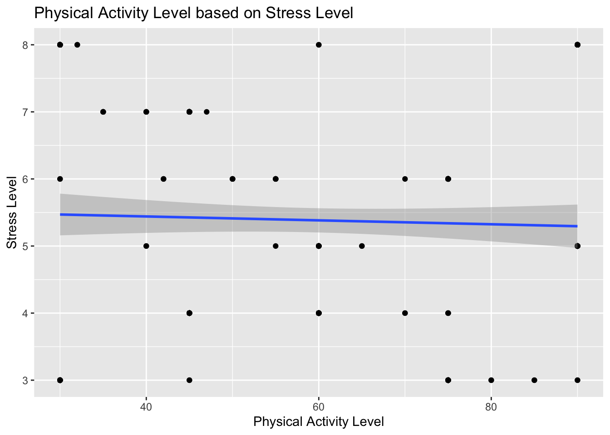

<!DOCTYPE html>
<html xmlns="http://www.w3.org/1999/xhtml" lang="en" xml:lang="en"><head>

<meta charset="utf-8">
<meta name="generator" content="quarto-1.3.450">

<meta name="viewport" content="width=device-width, initial-scale=1.0, user-scalable=yes">


<title>Sleep Disorder</title>
<style>
code{white-space: pre-wrap;}
span.smallcaps{font-variant: small-caps;}
div.columns{display: flex; gap: min(4vw, 1.5em);}
div.column{flex: auto; overflow-x: auto;}
div.hanging-indent{margin-left: 1.5em; text-indent: -1.5em;}
ul.task-list{list-style: none;}
ul.task-list li input[type="checkbox"] {
  width: 0.8em;
  margin: 0 0.8em 0.2em -1em; /* quarto-specific, see https://github.com/quarto-dev/quarto-cli/issues/4556 */ 
  vertical-align: middle;
}
/* CSS for syntax highlighting */
pre > code.sourceCode { white-space: pre; position: relative; }
pre > code.sourceCode > span { display: inline-block; line-height: 1.25; }
pre > code.sourceCode > span:empty { height: 1.2em; }
.sourceCode { overflow: visible; }
code.sourceCode > span { color: inherit; text-decoration: inherit; }
div.sourceCode { margin: 1em 0; }
pre.sourceCode { margin: 0; }
@media screen {
div.sourceCode { overflow: auto; }
}
@media print {
pre > code.sourceCode { white-space: pre-wrap; }
pre > code.sourceCode > span { text-indent: -5em; padding-left: 5em; }
}
pre.numberSource code
  { counter-reset: source-line 0; }
pre.numberSource code > span
  { position: relative; left: -4em; counter-increment: source-line; }
pre.numberSource code > span > a:first-child::before
  { content: counter(source-line);
    position: relative; left: -1em; text-align: right; vertical-align: baseline;
    border: none; display: inline-block;
    -webkit-touch-callout: none; -webkit-user-select: none;
    -khtml-user-select: none; -moz-user-select: none;
    -ms-user-select: none; user-select: none;
    padding: 0 4px; width: 4em;
  }
pre.numberSource { margin-left: 3em;  padding-left: 4px; }
div.sourceCode
  {   }
@media screen {
pre > code.sourceCode > span > a:first-child::before { text-decoration: underline; }
}
</style>


<script src="SleepDisorder_files/libs/clipboard/clipboard.min.js"></script>
<script src="SleepDisorder_files/libs/quarto-html/quarto.js"></script>
<script src="SleepDisorder_files/libs/quarto-html/popper.min.js"></script>
<script src="SleepDisorder_files/libs/quarto-html/tippy.umd.min.js"></script>
<script src="SleepDisorder_files/libs/quarto-html/anchor.min.js"></script>
<link href="SleepDisorder_files/libs/quarto-html/tippy.css" rel="stylesheet">
<link href="SleepDisorder_files/libs/quarto-html/quarto-syntax-highlighting.css" rel="stylesheet" id="quarto-text-highlighting-styles">
<script src="SleepDisorder_files/libs/bootstrap/bootstrap.min.js"></script>
<link href="SleepDisorder_files/libs/bootstrap/bootstrap-icons.css" rel="stylesheet">
<link href="SleepDisorder_files/libs/bootstrap/bootstrap.min.css" rel="stylesheet" id="quarto-bootstrap" data-mode="light">


</head>

<body class="fullcontent">

<div id="quarto-content" class="page-columns page-rows-contents page-layout-article">

<main class="content" id="quarto-document-content">

<header id="title-block-header" class="quarto-title-block default">
<div class="quarto-title">
<h1 class="title">Sleep Disorder</h1>
</div>


<div class="quarto-title-meta">

    
  
    
  </div>
  

</header>

<section id="sleep-health-and-lifestyle-analysis-project" class="level2">
<h2 class="anchored" data-anchor-id="sleep-health-and-lifestyle-analysis-project">Sleep Health and Lifestyle Analysis Project</h2>
<p>By:</p>
<ol type="1">
<li><p>Amabel Nabila (455854)</p>
<ul>
<li>Data Visualization and Analysis</li>
</ul></li>
<li><p>Mustafa Ceyhun Vural (455158)</p>
<ul>
<li>Machine Learning</li>
</ul></li>
<li><p>Onur Durmus (455860)</p>
<ul>
<li>Machine Learning</li>
</ul></li>
<li><p>Zehra Usta (455847)</p>
<ul>
<li>Machine Learning, Data Visualization, and Analysis</li>
</ul></li>
</ol>
</section>
<section id="project-objective" class="level2">
<h2 class="anchored" data-anchor-id="project-objective">Project Objective</h2>
<p>This project serves as the final assignment for the Reproducible Research course. It utilizes a dataset sourced from Kaggle and involves translating the code from Python to R. The aim of this project is to analyze the sleep health of individuals based on their respective lifestyles, incorporating machine learning techniques to enhance the analysis. Variables in this project include:</p>
<ul>
<li><p>Gender</p></li>
<li><p>Age</p></li>
<li><p>Occupation</p></li>
<li><p>Sleep Duration</p></li>
<li><p>Quality of Sleep</p></li>
<li><p>Physical Activity Level</p></li>
<li><p>Stress Level</p></li>
<li><p>BMI Category</p></li>
<li><p>Blood Pressure</p></li>
<li><p>Heart Rate</p></li>
<li><p>Daily Steps</p></li>
<li><p>Sleep Disorder</p></li>
</ul>
</section>
<section id="introduction" class="level2">
<h2 class="anchored" data-anchor-id="introduction">Introduction</h2>
<p>Sleep disorders (or sleep-wake disorders) are difficulties with the quality, timing, and quantity of sleep that cause daily discomfort and impairment in functioning. Sleep-wake disturbances are frequently associated with physical or mental health illnesses such as depression, anxiety, or cognitive difficulties. There are various forms of sleep-wake disorders, with insomnia being the most frequent. Other sleep-wake problems include sleep apnea. Insomnia is a common sleep problem that makes it difficult to get asleep and remain asleep. Meanwhile, sleep apnea is a condition in which you stop breathing while asleep.</p>
<p>In this study, we integrated visualizations from prior Python research into R and presented a more diversified range of machine learning models. Examples include Gradient Boosting Machine, Support Vector Regression, and the Neural Network Model.</p>
<p>Libraries in the project used the versions from date = “2024-04-23” with groundhog package.</p>
</section>
<section id="library" class="level2">
<h2 class="anchored" data-anchor-id="library">Library</h2>
<div class="cell">
<div class="sourceCode cell-code" id="cb1"><pre class="sourceCode r code-with-copy"><code class="sourceCode r"><span id="cb1-1"><a href="#cb1-1" aria-hidden="true" tabindex="-1"></a><span class="fu">library</span>(dplyr)</span></code><button title="Copy to Clipboard" class="code-copy-button"><i class="bi"></i></button></pre></div>
<div class="cell-output cell-output-stderr">
<pre><code>
Attaching package: 'dplyr'</code></pre>
</div>
<div class="cell-output cell-output-stderr">
<pre><code>The following objects are masked from 'package:stats':

    filter, lag</code></pre>
</div>
<div class="cell-output cell-output-stderr">
<pre><code>The following objects are masked from 'package:base':

    intersect, setdiff, setequal, union</code></pre>
</div>
<div class="sourceCode cell-code" id="cb5"><pre class="sourceCode r code-with-copy"><code class="sourceCode r"><span id="cb5-1"><a href="#cb5-1" aria-hidden="true" tabindex="-1"></a><span class="fu">library</span>(tidyr)</span>
<span id="cb5-2"><a href="#cb5-2" aria-hidden="true" tabindex="-1"></a><span class="fu">library</span>(ggplot2)</span>
<span id="cb5-3"><a href="#cb5-3" aria-hidden="true" tabindex="-1"></a><span class="fu">library</span>(patchwork)</span>
<span id="cb5-4"><a href="#cb5-4" aria-hidden="true" tabindex="-1"></a><span class="fu">library</span>(corrplot)</span></code><button title="Copy to Clipboard" class="code-copy-button"><i class="bi"></i></button></pre></div>
<div class="cell-output cell-output-stderr">
<pre><code>corrplot 0.92 loaded</code></pre>
</div>
<div class="sourceCode cell-code" id="cb7"><pre class="sourceCode r code-with-copy"><code class="sourceCode r"><span id="cb7-1"><a href="#cb7-1" aria-hidden="true" tabindex="-1"></a><span class="fu">library</span>(ggExtra)</span>
<span id="cb7-2"><a href="#cb7-2" aria-hidden="true" tabindex="-1"></a><span class="fu">library</span>(gbm)</span></code><button title="Copy to Clipboard" class="code-copy-button"><i class="bi"></i></button></pre></div>
<div class="cell-output cell-output-stderr">
<pre><code>Loaded gbm 2.1.9</code></pre>
</div>
<div class="cell-output cell-output-stderr">
<pre><code>This version of gbm is no longer under development. Consider transitioning to gbm3, https://github.com/gbm-developers/gbm3</code></pre>
</div>
<div class="sourceCode cell-code" id="cb10"><pre class="sourceCode r code-with-copy"><code class="sourceCode r"><span id="cb10-1"><a href="#cb10-1" aria-hidden="true" tabindex="-1"></a><span class="fu">library</span>(caret)</span></code><button title="Copy to Clipboard" class="code-copy-button"><i class="bi"></i></button></pre></div>
<div class="cell-output cell-output-stderr">
<pre><code>Loading required package: lattice</code></pre>
</div>
<div class="sourceCode cell-code" id="cb12"><pre class="sourceCode r code-with-copy"><code class="sourceCode r"><span id="cb12-1"><a href="#cb12-1" aria-hidden="true" tabindex="-1"></a><span class="fu">library</span>(caTools)</span>
<span id="cb12-2"><a href="#cb12-2" aria-hidden="true" tabindex="-1"></a><span class="fu">library</span>(stats)</span>
<span id="cb12-3"><a href="#cb12-3" aria-hidden="true" tabindex="-1"></a><span class="fu">library</span>(GGally)</span></code><button title="Copy to Clipboard" class="code-copy-button"><i class="bi"></i></button></pre></div>
<div class="cell-output cell-output-stderr">
<pre><code>Registered S3 method overwritten by 'GGally':
  method from   
  +.gg   ggplot2</code></pre>
</div>
<div class="sourceCode cell-code" id="cb14"><pre class="sourceCode r code-with-copy"><code class="sourceCode r"><span id="cb14-1"><a href="#cb14-1" aria-hidden="true" tabindex="-1"></a><span class="fu">library</span>(neuralnet)</span></code><button title="Copy to Clipboard" class="code-copy-button"><i class="bi"></i></button></pre></div>
<div class="cell-output cell-output-stderr">
<pre><code>
Attaching package: 'neuralnet'</code></pre>
</div>
<div class="cell-output cell-output-stderr">
<pre><code>The following object is masked from 'package:dplyr':

    compute</code></pre>
</div>
<div class="sourceCode cell-code" id="cb17"><pre class="sourceCode r code-with-copy"><code class="sourceCode r"><span id="cb17-1"><a href="#cb17-1" aria-hidden="true" tabindex="-1"></a><span class="fu">library</span>(Metrics)</span></code><button title="Copy to Clipboard" class="code-copy-button"><i class="bi"></i></button></pre></div>
<div class="cell-output cell-output-stderr">
<pre><code>
Attaching package: 'Metrics'</code></pre>
</div>
<div class="cell-output cell-output-stderr">
<pre><code>The following objects are masked from 'package:caret':

    precision, recall</code></pre>
</div>
<div class="sourceCode cell-code" id="cb20"><pre class="sourceCode r code-with-copy"><code class="sourceCode r"><span id="cb20-1"><a href="#cb20-1" aria-hidden="true" tabindex="-1"></a><span class="fu">library</span>(e1071)</span></code><button title="Copy to Clipboard" class="code-copy-button"><i class="bi"></i></button></pre></div>
</div>
<div class="cell">
<div class="sourceCode cell-code" id="cb21"><pre class="sourceCode r code-with-copy"><code class="sourceCode r"><span id="cb21-1"><a href="#cb21-1" aria-hidden="true" tabindex="-1"></a><span class="fu">library</span>(<span class="st">"groundhog"</span>)</span></code><button title="Copy to Clipboard" class="code-copy-button"><i class="bi"></i></button></pre></div>
<div class="cell-output cell-output-stderr">
<pre><code>Attached: 'Groundhog' (Version: 3.2.0)</code></pre>
</div>
<div class="cell-output cell-output-stderr">
<pre><code>Tips and troubleshooting: https://groundhogR.com</code></pre>
</div>
<div class="sourceCode cell-code" id="cb24"><pre class="sourceCode r code-with-copy"><code class="sourceCode r"><span id="cb24-1"><a href="#cb24-1" aria-hidden="true" tabindex="-1"></a>pkgs <span class="ot">&lt;-</span> <span class="fu">c</span>(<span class="st">"dplyr"</span>, <span class="st">"tidyr"</span>,<span class="st">"ggplot2"</span>,<span class="st">"patchwork"</span>,<span class="st">"corrplot"</span>,<span class="st">"ggExtra"</span>,<span class="st">"gbm"</span>,<span class="st">"caret"</span>,<span class="st">"caTools"</span>,<span class="st">"stats"</span>,<span class="st">"GGally"</span>,<span class="st">"neuralnet"</span>,<span class="st">"Metrics"</span>,<span class="st">"e1071"</span>)</span>
<span id="cb24-2"><a href="#cb24-2" aria-hidden="true" tabindex="-1"></a></span>
<span id="cb24-3"><a href="#cb24-3" aria-hidden="true" tabindex="-1"></a><span class="fu">groundhog.library</span>(pkgs, <span class="at">date =</span> <span class="st">"2024-04-23"</span>)</span></code><button title="Copy to Clipboard" class="code-copy-button"><i class="bi"></i></button></pre></div>
<div class="cell-output cell-output-stderr">
<pre><code>All requested packages are already attached</code></pre>
</div>
</div>
</section>
<section id="data" class="level2">
<h2 class="anchored" data-anchor-id="data">Data</h2>
<div class="cell">
<div class="sourceCode cell-code" id="cb26"><pre class="sourceCode r code-with-copy"><code class="sourceCode r"><span id="cb26-1"><a href="#cb26-1" aria-hidden="true" tabindex="-1"></a><span class="co"># Read the data</span></span>
<span id="cb26-2"><a href="#cb26-2" aria-hidden="true" tabindex="-1"></a></span>
<span id="cb26-3"><a href="#cb26-3" aria-hidden="true" tabindex="-1"></a>data <span class="ot">&lt;-</span> <span class="fu">read.csv</span>(<span class="st">'Sleep_health_and_lifestyle_dataset.csv'</span>)</span></code><button title="Copy to Clipboard" class="code-copy-button"><i class="bi"></i></button></pre></div>
</div>
<p>Reading a dataset in R</p>
</section>
<section id="data-cleaning" class="level2">
<h2 class="anchored" data-anchor-id="data-cleaning">Data Cleaning</h2>
<div class="cell">
<div class="sourceCode cell-code" id="cb27"><pre class="sourceCode r code-with-copy"><code class="sourceCode r"><span id="cb27-1"><a href="#cb27-1" aria-hidden="true" tabindex="-1"></a><span class="co"># Drop NA </span></span>
<span id="cb27-2"><a href="#cb27-2" aria-hidden="true" tabindex="-1"></a>data <span class="ot">&lt;-</span> <span class="fu">na.omit</span>(data)</span>
<span id="cb27-3"><a href="#cb27-3" aria-hidden="true" tabindex="-1"></a></span>
<span id="cb27-4"><a href="#cb27-4" aria-hidden="true" tabindex="-1"></a><span class="co"># Standardize "Normal Weight" and "normal" to "Normal" in "BMI Category"</span></span>
<span id="cb27-5"><a href="#cb27-5" aria-hidden="true" tabindex="-1"></a></span>
<span id="cb27-6"><a href="#cb27-6" aria-hidden="true" tabindex="-1"></a>data <span class="ot">&lt;-</span> data <span class="sc">%&gt;%</span></span>
<span id="cb27-7"><a href="#cb27-7" aria-hidden="true" tabindex="-1"></a>  <span class="fu">mutate</span>(<span class="at">BMI.Category =</span> <span class="fu">ifelse</span>(BMI.Category <span class="sc">%in%</span> <span class="fu">c</span>(<span class="st">"Normal Weight"</span>, <span class="st">"normal"</span>), <span class="st">"Normal"</span>, BMI.Category))</span>
<span id="cb27-8"><a href="#cb27-8" aria-hidden="true" tabindex="-1"></a></span>
<span id="cb27-9"><a href="#cb27-9" aria-hidden="true" tabindex="-1"></a><span class="co"># Cleaned data</span></span>
<span id="cb27-10"><a href="#cb27-10" aria-hidden="true" tabindex="-1"></a><span class="fu">head</span>(data)</span></code><button title="Copy to Clipboard" class="code-copy-button"><i class="bi"></i></button></pre></div>
<div class="cell-output cell-output-stdout">
<pre><code>  Person.ID Gender Age           Occupation Sleep.Duration Quality.of.Sleep
1         1   Male  27    Software Engineer            6.1                6
2         2   Male  28               Doctor            6.2                6
3         3   Male  28               Doctor            6.2                6
4         4   Male  28 Sales Representative            5.9                4
5         5   Male  28 Sales Representative            5.9                4
6         6   Male  28    Software Engineer            5.9                4
  Physical.Activity.Level Stress.Level BMI.Category Blood.Pressure Heart.Rate
1                      42            6   Overweight         126/83         77
2                      60            8       Normal         125/80         75
3                      60            8       Normal         125/80         75
4                      30            8        Obese         140/90         85
5                      30            8        Obese         140/90         85
6                      30            8        Obese         140/90         85
  Daily.Steps Sleep.Disorder
1        4200           None
2       10000           None
3       10000           None
4        3000    Sleep Apnea
5        3000    Sleep Apnea
6        3000       Insomnia</code></pre>
</div>
</div>
<p>Delete NA data, then standardize the BMI category column</p>
<div class="cell">
<div class="sourceCode cell-code" id="cb29"><pre class="sourceCode r code-with-copy"><code class="sourceCode r"><span id="cb29-1"><a href="#cb29-1" aria-hidden="true" tabindex="-1"></a><span class="co"># Split the Blood.Pressure column into two new columns and convert to numeric</span></span>
<span id="cb29-2"><a href="#cb29-2" aria-hidden="true" tabindex="-1"></a></span>
<span id="cb29-3"><a href="#cb29-3" aria-hidden="true" tabindex="-1"></a>data <span class="ot">&lt;-</span> data <span class="sc">%&gt;%</span></span>
<span id="cb29-4"><a href="#cb29-4" aria-hidden="true" tabindex="-1"></a>  <span class="fu">separate</span>(<span class="at">col =</span> Blood.Pressure, <span class="at">into =</span> <span class="fu">c</span>(<span class="st">"Systolic Pressure"</span>, <span class="st">"Diastolic Pressure"</span>), <span class="at">sep =</span> <span class="st">"/"</span>, <span class="at">convert =</span> <span class="cn">TRUE</span>) <span class="sc">%&gt;%</span></span>
<span id="cb29-5"><a href="#cb29-5" aria-hidden="true" tabindex="-1"></a>  <span class="fu">mutate</span>(<span class="st">`</span><span class="at">Systolic Pressure</span><span class="st">`</span> <span class="ot">=</span> <span class="fu">as.numeric</span>(<span class="st">`</span><span class="at">Systolic Pressure</span><span class="st">`</span>),</span>
<span id="cb29-6"><a href="#cb29-6" aria-hidden="true" tabindex="-1"></a>         <span class="st">`</span><span class="at">Diastolic Pressure</span><span class="st">`</span> <span class="ot">=</span> <span class="fu">as.numeric</span>(<span class="st">`</span><span class="at">Diastolic Pressure</span><span class="st">`</span>))</span>
<span id="cb29-7"><a href="#cb29-7" aria-hidden="true" tabindex="-1"></a></span>
<span id="cb29-8"><a href="#cb29-8" aria-hidden="true" tabindex="-1"></a><span class="fu">str</span>(data)</span></code><button title="Copy to Clipboard" class="code-copy-button"><i class="bi"></i></button></pre></div>
<div class="cell-output cell-output-stdout">
<pre><code>'data.frame':   374 obs. of  14 variables:
 $ Person.ID              : int  1 2 3 4 5 6 7 8 9 10 ...
 $ Gender                 : chr  "Male" "Male" "Male" "Male" ...
 $ Age                    : int  27 28 28 28 28 28 29 29 29 29 ...
 $ Occupation             : chr  "Software Engineer" "Doctor" "Doctor" "Sales Representative" ...
 $ Sleep.Duration         : num  6.1 6.2 6.2 5.9 5.9 5.9 6.3 7.8 7.8 7.8 ...
 $ Quality.of.Sleep       : int  6 6 6 4 4 4 6 7 7 7 ...
 $ Physical.Activity.Level: int  42 60 60 30 30 30 40 75 75 75 ...
 $ Stress.Level           : int  6 8 8 8 8 8 7 6 6 6 ...
 $ BMI.Category           : chr  "Overweight" "Normal" "Normal" "Obese" ...
 $ Systolic Pressure      : num  126 125 125 140 140 140 140 120 120 120 ...
 $ Diastolic Pressure     : num  83 80 80 90 90 90 90 80 80 80 ...
 $ Heart.Rate             : int  77 75 75 85 85 85 82 70 70 70 ...
 $ Daily.Steps            : int  4200 10000 10000 3000 3000 3000 3500 8000 8000 8000 ...
 $ Sleep.Disorder         : chr  "None" "None" "None" "Sleep Apnea" ...</code></pre>
</div>
</div>
<div class="cell">
<div class="sourceCode cell-code" id="cb31"><pre class="sourceCode r code-with-copy"><code class="sourceCode r"><span id="cb31-1"><a href="#cb31-1" aria-hidden="true" tabindex="-1"></a><span class="fu">summary</span>(data)</span></code><button title="Copy to Clipboard" class="code-copy-button"><i class="bi"></i></button></pre></div>
<div class="cell-output cell-output-stdout">
<pre><code>   Person.ID         Gender               Age         Occupation       
 Min.   :  1.00   Length:374         Min.   :27.00   Length:374        
 1st Qu.: 94.25   Class :character   1st Qu.:35.25   Class :character  
 Median :187.50   Mode  :character   Median :43.00   Mode  :character  
 Mean   :187.50                      Mean   :42.18                     
 3rd Qu.:280.75                      3rd Qu.:50.00                     
 Max.   :374.00                      Max.   :59.00                     
 Sleep.Duration  Quality.of.Sleep Physical.Activity.Level  Stress.Level  
 Min.   :5.800   Min.   :4.000    Min.   :30.00           Min.   :3.000  
 1st Qu.:6.400   1st Qu.:6.000    1st Qu.:45.00           1st Qu.:4.000  
 Median :7.200   Median :7.000    Median :60.00           Median :5.000  
 Mean   :7.132   Mean   :7.313    Mean   :59.17           Mean   :5.385  
 3rd Qu.:7.800   3rd Qu.:8.000    3rd Qu.:75.00           3rd Qu.:7.000  
 Max.   :8.500   Max.   :9.000    Max.   :90.00           Max.   :8.000  
 BMI.Category       Systolic Pressure Diastolic Pressure   Heart.Rate   
 Length:374         Min.   :115.0     Min.   :75.00      Min.   :65.00  
 Class :character   1st Qu.:125.0     1st Qu.:80.00      1st Qu.:68.00  
 Mode  :character   Median :130.0     Median :85.00      Median :70.00  
                    Mean   :128.6     Mean   :84.65      Mean   :70.17  
                    3rd Qu.:135.0     3rd Qu.:90.00      3rd Qu.:72.00  
                    Max.   :142.0     Max.   :95.00      Max.   :86.00  
  Daily.Steps    Sleep.Disorder    
 Min.   : 3000   Length:374        
 1st Qu.: 5600   Class :character  
 Median : 7000   Mode  :character  
 Mean   : 6817                     
 3rd Qu.: 8000                     
 Max.   :10000                     </code></pre>
</div>
</div>
<p>Splitting the Blood.Pressure Column and Converting to Numeric and viewing Summary Data Statistics</p>
<div class="cell">
<div class="sourceCode cell-code" id="cb33"><pre class="sourceCode r code-with-copy"><code class="sourceCode r"><span id="cb33-1"><a href="#cb33-1" aria-hidden="true" tabindex="-1"></a><span class="co"># Function for categorizing blood pressure</span></span>
<span id="cb33-2"><a href="#cb33-2" aria-hidden="true" tabindex="-1"></a></span>
<span id="cb33-3"><a href="#cb33-3" aria-hidden="true" tabindex="-1"></a>categorize_blood_pressure <span class="ot">&lt;-</span> <span class="cf">function</span>(systolic, diastolic) {</span>
<span id="cb33-4"><a href="#cb33-4" aria-hidden="true" tabindex="-1"></a>  <span class="cf">if</span> (<span class="fu">is.na</span>(systolic) <span class="sc">|</span> <span class="fu">is.na</span>(diastolic)) {</span>
<span id="cb33-5"><a href="#cb33-5" aria-hidden="true" tabindex="-1"></a>    <span class="fu">return</span>(<span class="cn">NA</span>)</span>
<span id="cb33-6"><a href="#cb33-6" aria-hidden="true" tabindex="-1"></a>  } <span class="cf">else</span> <span class="cf">if</span> (systolic <span class="sc">&lt;</span> <span class="dv">120</span> <span class="sc">&amp;</span> diastolic <span class="sc">&lt;</span> <span class="dv">80</span>) {</span>
<span id="cb33-7"><a href="#cb33-7" aria-hidden="true" tabindex="-1"></a>    <span class="fu">return</span>(<span class="st">'Optimal'</span>)</span>
<span id="cb33-8"><a href="#cb33-8" aria-hidden="true" tabindex="-1"></a>  } <span class="cf">else</span> <span class="cf">if</span> (systolic <span class="sc">&lt;=</span> <span class="dv">139</span> <span class="sc">|</span> diastolic <span class="sc">&lt;=</span> <span class="dv">89</span>) {</span>
<span id="cb33-9"><a href="#cb33-9" aria-hidden="true" tabindex="-1"></a>    <span class="fu">return</span>(<span class="st">'Normal'</span>)</span>
<span id="cb33-10"><a href="#cb33-10" aria-hidden="true" tabindex="-1"></a>  } <span class="cf">else</span> <span class="cf">if</span> (systolic <span class="sc">&gt;=</span> <span class="dv">140</span> <span class="sc">|</span> diastolic <span class="sc">&gt;=</span> <span class="dv">90</span>) {</span>
<span id="cb33-11"><a href="#cb33-11" aria-hidden="true" tabindex="-1"></a>    <span class="fu">return</span>(<span class="st">'Hypertension'</span>)</span>
<span id="cb33-12"><a href="#cb33-12" aria-hidden="true" tabindex="-1"></a>  } <span class="cf">else</span> {</span>
<span id="cb33-13"><a href="#cb33-13" aria-hidden="true" tabindex="-1"></a>    <span class="fu">return</span>(<span class="st">'Other'</span>)</span>
<span id="cb33-14"><a href="#cb33-14" aria-hidden="true" tabindex="-1"></a>  }</span>
<span id="cb33-15"><a href="#cb33-15" aria-hidden="true" tabindex="-1"></a>}</span>
<span id="cb33-16"><a href="#cb33-16" aria-hidden="true" tabindex="-1"></a></span>
<span id="cb33-17"><a href="#cb33-17" aria-hidden="true" tabindex="-1"></a></span>
<span id="cb33-18"><a href="#cb33-18" aria-hidden="true" tabindex="-1"></a>data <span class="ot">&lt;-</span> data <span class="sc">%&gt;%</span></span>
<span id="cb33-19"><a href="#cb33-19" aria-hidden="true" tabindex="-1"></a>  <span class="fu">rowwise</span>() <span class="sc">%&gt;%</span></span>
<span id="cb33-20"><a href="#cb33-20" aria-hidden="true" tabindex="-1"></a>  <span class="fu">mutate</span>(<span class="st">`</span><span class="at">Blood.Pressure.Category</span><span class="st">`</span> <span class="ot">=</span> <span class="fu">categorize_blood_pressure</span>(<span class="st">`</span><span class="at">Systolic Pressure</span><span class="st">`</span>, <span class="st">`</span><span class="at">Diastolic Pressure</span><span class="st">`</span>))</span>
<span id="cb33-21"><a href="#cb33-21" aria-hidden="true" tabindex="-1"></a></span>
<span id="cb33-22"><a href="#cb33-22" aria-hidden="true" tabindex="-1"></a><span class="fu">head</span>(data)</span></code><button title="Copy to Clipboard" class="code-copy-button"><i class="bi"></i></button></pre></div>
<div class="cell-output cell-output-stdout">
<pre><code># A tibble: 6 × 15
# Rowwise: 
  Person.ID Gender   Age Occupation           Sleep.Duration Quality.of.Sleep
      &lt;int&gt; &lt;chr&gt;  &lt;int&gt; &lt;chr&gt;                         &lt;dbl&gt;            &lt;int&gt;
1         1 Male      27 Software Engineer               6.1                6
2         2 Male      28 Doctor                          6.2                6
3         3 Male      28 Doctor                          6.2                6
4         4 Male      28 Sales Representative            5.9                4
5         5 Male      28 Sales Representative            5.9                4
6         6 Male      28 Software Engineer               5.9                4
# ℹ 9 more variables: Physical.Activity.Level &lt;int&gt;, Stress.Level &lt;int&gt;,
#   BMI.Category &lt;chr&gt;, `Systolic Pressure` &lt;dbl&gt;, `Diastolic Pressure` &lt;dbl&gt;,
#   Heart.Rate &lt;int&gt;, Daily.Steps &lt;int&gt;, Sleep.Disorder &lt;chr&gt;,
#   Blood.Pressure.Category &lt;chr&gt;</code></pre>
</div>
</div>
<p>Defining Functions. According to the Italian Ministry of Health, Blood Pressure values ​​can be classified based on ‘Systolic’ and ‘Diastolic’ values. Based on previous research, we can identify three possible categories above.</p>
</section>
<section id="data-visualization" class="level2">
<h2 class="anchored" data-anchor-id="data-visualization">Data Visualization</h2>
<div class="cell">
<div class="sourceCode cell-code" id="cb35"><pre class="sourceCode r code-with-copy"><code class="sourceCode r"><span id="cb35-1"><a href="#cb35-1" aria-hidden="true" tabindex="-1"></a>age_groups <span class="ot">&lt;-</span> data <span class="sc">%&gt;%</span></span>
<span id="cb35-2"><a href="#cb35-2" aria-hidden="true" tabindex="-1"></a>  <span class="fu">mutate</span>(<span class="at">Age.Group =</span> <span class="fu">case_when</span>(</span>
<span id="cb35-3"><a href="#cb35-3" aria-hidden="true" tabindex="-1"></a>    Age <span class="sc">&lt;=</span> <span class="dv">35</span> <span class="sc">~</span> <span class="st">"35 and below"</span>,</span>
<span id="cb35-4"><a href="#cb35-4" aria-hidden="true" tabindex="-1"></a>    Age <span class="sc">&gt;</span> <span class="dv">35</span> <span class="sc">~</span> <span class="st">"35 and above"</span></span>
<span id="cb35-5"><a href="#cb35-5" aria-hidden="true" tabindex="-1"></a>  ))</span>
<span id="cb35-6"><a href="#cb35-6" aria-hidden="true" tabindex="-1"></a></span>
<span id="cb35-7"><a href="#cb35-7" aria-hidden="true" tabindex="-1"></a><span class="fu">ggplot</span>(age_groups, <span class="fu">aes</span>(<span class="at">x =</span> Age.Group, <span class="at">y =</span> Sleep.Duration, <span class="at">fill =</span> Age.Group)) <span class="sc">+</span></span>
<span id="cb35-8"><a href="#cb35-8" aria-hidden="true" tabindex="-1"></a>  <span class="fu">geom_bar</span>(<span class="at">stat =</span> <span class="st">"summary"</span>, <span class="at">fun =</span> <span class="st">"mean"</span>) <span class="sc">+</span></span>
<span id="cb35-9"><a href="#cb35-9" aria-hidden="true" tabindex="-1"></a>  <span class="fu">labs</span>(<span class="at">title =</span> <span class="st">"Mean Sleep Duration by Age Group"</span>, <span class="at">x =</span> <span class="st">"Age Group"</span>, <span class="at">y =</span> <span class="st">"Mean Sleep Duration (hours)"</span>) <span class="sc">+</span></span>
<span id="cb35-10"><a href="#cb35-10" aria-hidden="true" tabindex="-1"></a>  <span class="fu">theme_minimal</span>()</span></code><button title="Copy to Clipboard" class="code-copy-button"><i class="bi"></i></button></pre></div>
<div class="cell-output-display">
<p></p>
</div>
<div class="sourceCode cell-code" id="cb36"><pre class="sourceCode r code-with-copy"><code class="sourceCode r"><span id="cb36-1"><a href="#cb36-1" aria-hidden="true" tabindex="-1"></a><span class="fu">ggplot</span>(age_groups, <span class="fu">aes</span>(<span class="at">x =</span> Age.Group, <span class="at">y =</span> Quality.of.Sleep, <span class="at">fill =</span> Age.Group)) <span class="sc">+</span></span>
<span id="cb36-2"><a href="#cb36-2" aria-hidden="true" tabindex="-1"></a>  <span class="fu">geom_bar</span>(<span class="at">stat =</span> <span class="st">"summary"</span>, <span class="at">fun =</span> <span class="st">"mean"</span>) <span class="sc">+</span></span>
<span id="cb36-3"><a href="#cb36-3" aria-hidden="true" tabindex="-1"></a>  <span class="fu">labs</span>(<span class="at">title =</span> <span class="st">"Mean Quality of Sleep by Age Group"</span>, <span class="at">x =</span> <span class="st">"Age Group"</span>, <span class="at">y =</span> <span class="st">"Mean Quality of Sleep"</span>) <span class="sc">+</span></span>
<span id="cb36-4"><a href="#cb36-4" aria-hidden="true" tabindex="-1"></a>  <span class="fu">theme_minimal</span>()</span></code><button title="Copy to Clipboard" class="code-copy-button"><i class="bi"></i></button></pre></div>
<div class="cell-output-display">
<p></p>
</div>
<div class="sourceCode cell-code" id="cb37"><pre class="sourceCode r code-with-copy"><code class="sourceCode r"><span id="cb37-1"><a href="#cb37-1" aria-hidden="true" tabindex="-1"></a><span class="fu">ggplot</span>(age_groups, <span class="fu">aes</span>(<span class="at">x =</span> Age.Group, <span class="at">y =</span> Physical.Activity.Level, <span class="at">fill =</span> Age.Group)) <span class="sc">+</span></span>
<span id="cb37-2"><a href="#cb37-2" aria-hidden="true" tabindex="-1"></a>  <span class="fu">geom_bar</span>(<span class="at">stat =</span> <span class="st">"summary"</span>, <span class="at">fun =</span> <span class="st">"mean"</span>) <span class="sc">+</span></span>
<span id="cb37-3"><a href="#cb37-3" aria-hidden="true" tabindex="-1"></a>  <span class="fu">labs</span>(<span class="at">title =</span> <span class="st">"Mean Physical Activity Level by Age Group"</span>, <span class="at">x =</span> <span class="st">"Age Group"</span>, <span class="at">y =</span> <span class="st">"Mean Physical Activity Level"</span>) <span class="sc">+</span></span>
<span id="cb37-4"><a href="#cb37-4" aria-hidden="true" tabindex="-1"></a>  <span class="fu">theme_minimal</span>()</span></code><button title="Copy to Clipboard" class="code-copy-button"><i class="bi"></i></button></pre></div>
<div class="cell-output-display">
<p></p>
</div>
<div class="sourceCode cell-code" id="cb38"><pre class="sourceCode r code-with-copy"><code class="sourceCode r"><span id="cb38-1"><a href="#cb38-1" aria-hidden="true" tabindex="-1"></a><span class="fu">ggplot</span>(age_groups, <span class="fu">aes</span>(<span class="at">x =</span> Age.Group, <span class="at">y =</span> Stress.Level, <span class="at">fill =</span> Age.Group)) <span class="sc">+</span></span>
<span id="cb38-2"><a href="#cb38-2" aria-hidden="true" tabindex="-1"></a>  <span class="fu">geom_bar</span>(<span class="at">stat =</span> <span class="st">"summary"</span>, <span class="at">fun =</span> <span class="st">"mean"</span>) <span class="sc">+</span></span>
<span id="cb38-3"><a href="#cb38-3" aria-hidden="true" tabindex="-1"></a>  <span class="fu">labs</span>(<span class="at">title =</span> <span class="st">"Mean Stress Level by Age Group"</span>, <span class="at">x =</span> <span class="st">"Age Group"</span>, <span class="at">y =</span> <span class="st">"Mean Stress Level"</span>) <span class="sc">+</span></span>
<span id="cb38-4"><a href="#cb38-4" aria-hidden="true" tabindex="-1"></a>  <span class="fu">theme_minimal</span>()</span></code><button title="Copy to Clipboard" class="code-copy-button"><i class="bi"></i></button></pre></div>
<div class="cell-output-display">
<p></p>
</div>
</div>
<p>Categorizing age into two groups, over 35 and under 35. On average, those over 35 have higher sleep duration, sleep quality and physical activity. However, those under 35 years of age have higher levels of stress than those over 35 years of age.</p>
<div class="cell">
<div class="sourceCode cell-code" id="cb39"><pre class="sourceCode r code-with-copy"><code class="sourceCode r"><span id="cb39-1"><a href="#cb39-1" aria-hidden="true" tabindex="-1"></a><span class="fu">ggplot</span>(data, <span class="fu">aes</span>(<span class="at">x =</span> Stress.Level)) <span class="sc">+</span></span>
<span id="cb39-2"><a href="#cb39-2" aria-hidden="true" tabindex="-1"></a>  <span class="fu">geom_density</span>(<span class="at">fill =</span> <span class="st">"lightblue"</span>, <span class="at">alpha =</span> <span class="fl">0.5</span>) <span class="sc">+</span></span>
<span id="cb39-3"><a href="#cb39-3" aria-hidden="true" tabindex="-1"></a>  <span class="fu">labs</span>(<span class="at">title =</span> <span class="st">"Density Plot of Stress.Level"</span>, <span class="at">x =</span> <span class="st">"Stress Level"</span>, <span class="at">y =</span> <span class="st">"Density"</span>) <span class="sc">+</span></span>
<span id="cb39-4"><a href="#cb39-4" aria-hidden="true" tabindex="-1"></a>  <span class="fu">theme_minimal</span>()</span></code><button title="Copy to Clipboard" class="code-copy-button"><i class="bi"></i></button></pre></div>
<div class="cell-output-display">
<p></p>
</div>
<div class="sourceCode cell-code" id="cb40"><pre class="sourceCode r code-with-copy"><code class="sourceCode r"><span id="cb40-1"><a href="#cb40-1" aria-hidden="true" tabindex="-1"></a><span class="fu">ggplot</span>(data, <span class="fu">aes</span>(<span class="at">x =</span> Physical.Activity.Level)) <span class="sc">+</span></span>
<span id="cb40-2"><a href="#cb40-2" aria-hidden="true" tabindex="-1"></a>  <span class="fu">geom_density</span>(<span class="at">fill =</span> <span class="st">"lightblue"</span>, <span class="at">alpha =</span> <span class="fl">0.5</span>) <span class="sc">+</span></span>
<span id="cb40-3"><a href="#cb40-3" aria-hidden="true" tabindex="-1"></a>  <span class="fu">labs</span>(<span class="at">title =</span> <span class="st">"Density Plot of Physical.Activity.Leve"</span>, <span class="at">x =</span> <span class="st">"Physical.Activity.Leve"</span>, <span class="at">y =</span> <span class="st">"Density"</span>) <span class="sc">+</span></span>
<span id="cb40-4"><a href="#cb40-4" aria-hidden="true" tabindex="-1"></a>  <span class="fu">theme_minimal</span>()</span></code><button title="Copy to Clipboard" class="code-copy-button"><i class="bi"></i></button></pre></div>
<div class="cell-output-display">
<p></p>
</div>
<div class="sourceCode cell-code" id="cb41"><pre class="sourceCode r code-with-copy"><code class="sourceCode r"><span id="cb41-1"><a href="#cb41-1" aria-hidden="true" tabindex="-1"></a><span class="fu">ggplot</span>(data, <span class="fu">aes</span>(<span class="at">x =</span> Sleep.Duration)) <span class="sc">+</span></span>
<span id="cb41-2"><a href="#cb41-2" aria-hidden="true" tabindex="-1"></a>  <span class="fu">geom_density</span>(<span class="at">fill =</span> <span class="st">"lightblue"</span>, <span class="at">alpha =</span> <span class="fl">0.5</span>) <span class="sc">+</span></span>
<span id="cb41-3"><a href="#cb41-3" aria-hidden="true" tabindex="-1"></a>  <span class="fu">labs</span>(<span class="at">title =</span> <span class="st">"Density Plot of Sleep.Duration"</span>, <span class="at">x =</span> <span class="st">"Sleep.Duration"</span>, <span class="at">y =</span> <span class="st">"Density"</span>) <span class="sc">+</span></span>
<span id="cb41-4"><a href="#cb41-4" aria-hidden="true" tabindex="-1"></a>  <span class="fu">theme_minimal</span>()</span></code><button title="Copy to Clipboard" class="code-copy-button"><i class="bi"></i></button></pre></div>
<div class="cell-output-display">
<p></p>
</div>
</div>
<p>The stress level has a different distribution in each plot. In the first plot, the stress level is 4 and the other is around stress level 6. In the second, the plot tends to fluctuate. Meanwhile, in the third plot, the levels tend to be close, namely around stress levels 6 and 7.</p>
<div class="cell">
<div class="sourceCode cell-code" id="cb42"><pre class="sourceCode r code-with-copy"><code class="sourceCode r"><span id="cb42-1"><a href="#cb42-1" aria-hidden="true" tabindex="-1"></a><span class="co">#Chat GPT is used for this section. </span></span>
<span id="cb42-2"><a href="#cb42-2" aria-hidden="true" tabindex="-1"></a></span>
<span id="cb42-3"><a href="#cb42-3" aria-hidden="true" tabindex="-1"></a>mean_sleep <span class="ot">&lt;-</span> <span class="fu">mean</span>(data<span class="sc">$</span>Quality.of.Sleep, <span class="at">na.rm =</span> <span class="cn">TRUE</span>)</span>
<span id="cb42-4"><a href="#cb42-4" aria-hidden="true" tabindex="-1"></a>median_sleep <span class="ot">&lt;-</span> <span class="fu">median</span>(data<span class="sc">$</span>Quality.of.Sleep, <span class="at">na.rm =</span> <span class="cn">TRUE</span>)</span>
<span id="cb42-5"><a href="#cb42-5" aria-hidden="true" tabindex="-1"></a>mode_sleep <span class="ot">&lt;-</span> <span class="fu">as.numeric</span>(<span class="fu">names</span>(<span class="fu">sort</span>(<span class="fu">table</span>(data<span class="sc">$</span>Quality.of.Sleep), <span class="at">decreasing =</span> <span class="cn">TRUE</span>)[<span class="dv">1</span>]))</span>
<span id="cb42-6"><a href="#cb42-6" aria-hidden="true" tabindex="-1"></a></span>
<span id="cb42-7"><a href="#cb42-7" aria-hidden="true" tabindex="-1"></a><span class="co"># Histogram </span></span>
<span id="cb42-8"><a href="#cb42-8" aria-hidden="true" tabindex="-1"></a></span>
<span id="cb42-9"><a href="#cb42-9" aria-hidden="true" tabindex="-1"></a>quality_of_sleep_plot <span class="ot">&lt;-</span> <span class="fu">ggplot</span>(data, <span class="fu">aes</span>(<span class="at">x =</span> Quality.of.Sleep)) <span class="sc">+</span></span>
<span id="cb42-10"><a href="#cb42-10" aria-hidden="true" tabindex="-1"></a>  <span class="fu">geom_histogram</span>(<span class="fu">aes</span>(<span class="at">y =</span> ..count..), <span class="at">binwidth =</span> <span class="dv">1</span>, <span class="at">fill =</span> <span class="st">"lightblue"</span>, <span class="at">color =</span> <span class="st">"black"</span>) <span class="sc">+</span></span>
<span id="cb42-11"><a href="#cb42-11" aria-hidden="true" tabindex="-1"></a>  <span class="fu">geom_vline</span>(<span class="fu">aes</span>(<span class="at">xintercept =</span> mean_sleep, <span class="at">color =</span> <span class="st">"Mean"</span>), <span class="at">linetype =</span> <span class="st">"dashed"</span>, <span class="at">linewidth =</span> <span class="dv">1</span>) <span class="sc">+</span></span>
<span id="cb42-12"><a href="#cb42-12" aria-hidden="true" tabindex="-1"></a>  <span class="fu">geom_vline</span>(<span class="fu">aes</span>(<span class="at">xintercept =</span> median_sleep, <span class="at">color =</span> <span class="st">"Median"</span>), <span class="at">linetype =</span> <span class="st">"dotted"</span>, <span class="at">linewidth =</span> <span class="dv">1</span>) <span class="sc">+</span></span>
<span id="cb42-13"><a href="#cb42-13" aria-hidden="true" tabindex="-1"></a>  <span class="fu">geom_vline</span>(<span class="fu">aes</span>(<span class="at">xintercept =</span> mode_sleep, <span class="at">color =</span> <span class="st">"Mode"</span>), <span class="at">linetype =</span> <span class="st">"dotdash"</span>, <span class="at">linewidth =</span> <span class="dv">1</span>) <span class="sc">+</span></span>
<span id="cb42-14"><a href="#cb42-14" aria-hidden="true" tabindex="-1"></a>  <span class="fu">scale_color_manual</span>(<span class="at">name =</span> <span class="st">"Statistics"</span>, <span class="at">values =</span> <span class="fu">c</span>(<span class="st">"Mean"</span> <span class="ot">=</span> <span class="st">"red"</span>, <span class="st">"Median"</span> <span class="ot">=</span> <span class="st">"green"</span>, <span class="st">"Mode"</span> <span class="ot">=</span> <span class="st">"blue"</span>)) <span class="sc">+</span></span>
<span id="cb42-15"><a href="#cb42-15" aria-hidden="true" tabindex="-1"></a>  <span class="fu">labs</span>(<span class="at">title =</span> <span class="st">"Quality of Sleep Distribution"</span>, <span class="at">x =</span> <span class="st">"Quality of Sleep"</span>, <span class="at">y =</span> <span class="st">"Count"</span>) <span class="sc">+</span></span>
<span id="cb42-16"><a href="#cb42-16" aria-hidden="true" tabindex="-1"></a>  <span class="fu">theme_minimal</span>() <span class="sc">+</span></span>
<span id="cb42-17"><a href="#cb42-17" aria-hidden="true" tabindex="-1"></a>  <span class="fu">theme</span>(</span>
<span id="cb42-18"><a href="#cb42-18" aria-hidden="true" tabindex="-1"></a>    <span class="at">legend.position =</span> <span class="st">"right"</span>,</span>
<span id="cb42-19"><a href="#cb42-19" aria-hidden="true" tabindex="-1"></a>    <span class="at">plot.title =</span> <span class="fu">element_text</span>(<span class="at">hjust =</span> <span class="fl">0.5</span>),</span>
<span id="cb42-20"><a href="#cb42-20" aria-hidden="true" tabindex="-1"></a>    <span class="at">axis.title.x =</span> <span class="fu">element_text</span>(<span class="at">vjust =</span> <span class="sc">-</span><span class="fl">0.2</span>),</span>
<span id="cb42-21"><a href="#cb42-21" aria-hidden="true" tabindex="-1"></a>    <span class="at">axis.title.y =</span> <span class="fu">element_text</span>(<span class="at">vjust =</span> <span class="fl">1.2</span>)</span>
<span id="cb42-22"><a href="#cb42-22" aria-hidden="true" tabindex="-1"></a>  )</span>
<span id="cb42-23"><a href="#cb42-23" aria-hidden="true" tabindex="-1"></a></span>
<span id="cb42-24"><a href="#cb42-24" aria-hidden="true" tabindex="-1"></a><span class="fu">print</span>(quality_of_sleep_plot)</span></code><button title="Copy to Clipboard" class="code-copy-button"><i class="bi"></i></button></pre></div>
<div class="cell-output cell-output-stderr">
<pre><code>Warning: The dot-dot notation (`..count..`) was deprecated in ggplot2 3.4.0.
ℹ Please use `after_stat(count)` instead.</code></pre>
</div>
<div class="cell-output-display">
<p></p>
</div>
</div>
<p>The majority of participants reported excellent quality of sleep (average scores of 7 and 8). The fact that the mode is higher than both the mean and the median indicates that, while some people may have poor sleep quality, this group is more likely to have good sleep.<br>
</p>
<div class="cell">
<div class="sourceCode cell-code" id="cb44"><pre class="sourceCode r code-with-copy"><code class="sourceCode r"><span id="cb44-1"><a href="#cb44-1" aria-hidden="true" tabindex="-1"></a><span class="co">#Chat GPT is used for this section. </span></span>
<span id="cb44-2"><a href="#cb44-2" aria-hidden="true" tabindex="-1"></a></span>
<span id="cb44-3"><a href="#cb44-3" aria-hidden="true" tabindex="-1"></a><span class="co"># Column names</span></span>
<span id="cb44-4"><a href="#cb44-4" aria-hidden="true" tabindex="-1"></a>quality_of_sleep_col <span class="ot">&lt;-</span> <span class="st">"Quality.of.Sleep"</span></span>
<span id="cb44-5"><a href="#cb44-5" aria-hidden="true" tabindex="-1"></a>grouping_cols <span class="ot">&lt;-</span> <span class="fu">c</span>(<span class="st">"Gender"</span>, <span class="st">"Occupation"</span>, <span class="st">"BMI.Category"</span>, <span class="st">"Blood.Pressure.Category"</span>, <span class="st">"Sleep.Disorder"</span>)</span>
<span id="cb44-6"><a href="#cb44-6" aria-hidden="true" tabindex="-1"></a></span>
<span id="cb44-7"><a href="#cb44-7" aria-hidden="true" tabindex="-1"></a>plots <span class="ot">&lt;-</span> <span class="fu">list</span>()</span>
<span id="cb44-8"><a href="#cb44-8" aria-hidden="true" tabindex="-1"></a></span>
<span id="cb44-9"><a href="#cb44-9" aria-hidden="true" tabindex="-1"></a></span>
<span id="cb44-10"><a href="#cb44-10" aria-hidden="true" tabindex="-1"></a><span class="cf">for</span>(grouping_col <span class="cf">in</span> grouping_cols) {</span>
<span id="cb44-11"><a href="#cb44-11" aria-hidden="true" tabindex="-1"></a>  <span class="co"># Check if each group has at least two data points</span></span>
<span id="cb44-12"><a href="#cb44-12" aria-hidden="true" tabindex="-1"></a>  valid_groups <span class="ot">&lt;-</span> data <span class="sc">%&gt;%</span></span>
<span id="cb44-13"><a href="#cb44-13" aria-hidden="true" tabindex="-1"></a>    <span class="fu">group_by</span>(<span class="sc">!!</span><span class="fu">sym</span>(grouping_col)) <span class="sc">%&gt;%</span></span>
<span id="cb44-14"><a href="#cb44-14" aria-hidden="true" tabindex="-1"></a>    <span class="fu">filter</span>(<span class="fu">n</span>() <span class="sc">&gt;</span> <span class="dv">1</span>) <span class="sc">%&gt;%</span></span>
<span id="cb44-15"><a href="#cb44-15" aria-hidden="true" tabindex="-1"></a>    <span class="fu">pull</span>(<span class="sc">!!</span><span class="fu">sym</span>(grouping_col)) <span class="sc">%&gt;%</span></span>
<span id="cb44-16"><a href="#cb44-16" aria-hidden="true" tabindex="-1"></a>    <span class="fu">unique</span>()</span>
<span id="cb44-17"><a href="#cb44-17" aria-hidden="true" tabindex="-1"></a>  </span>
<span id="cb44-18"><a href="#cb44-18" aria-hidden="true" tabindex="-1"></a>  <span class="co"># Create the density plot only for valid groups</span></span>
<span id="cb44-19"><a href="#cb44-19" aria-hidden="true" tabindex="-1"></a>  <span class="cf">if</span> (<span class="fu">length</span>(valid_groups) <span class="sc">&gt;</span> <span class="dv">0</span>) {</span>
<span id="cb44-20"><a href="#cb44-20" aria-hidden="true" tabindex="-1"></a>    p <span class="ot">&lt;-</span> <span class="fu">ggplot</span>(data <span class="sc">%&gt;%</span> <span class="fu">filter</span>(<span class="sc">!!</span><span class="fu">sym</span>(grouping_col) <span class="sc">%in%</span> valid_groups), </span>
<span id="cb44-21"><a href="#cb44-21" aria-hidden="true" tabindex="-1"></a>                <span class="fu">aes_string</span>(<span class="at">x =</span> quality_of_sleep_col, <span class="at">fill =</span> grouping_col)) <span class="sc">+</span></span>
<span id="cb44-22"><a href="#cb44-22" aria-hidden="true" tabindex="-1"></a>      <span class="fu">geom_density</span>(<span class="at">alpha =</span> <span class="fl">0.7</span>) <span class="sc">+</span></span>
<span id="cb44-23"><a href="#cb44-23" aria-hidden="true" tabindex="-1"></a>      <span class="fu">theme_minimal</span>() <span class="sc">+</span></span>
<span id="cb44-24"><a href="#cb44-24" aria-hidden="true" tabindex="-1"></a>      <span class="fu">labs</span>(<span class="at">title =</span> <span class="fu">paste</span>(<span class="st">"Quality of Sleep by"</span>, grouping_col))</span>
<span id="cb44-25"><a href="#cb44-25" aria-hidden="true" tabindex="-1"></a>    plots[[grouping_col]] <span class="ot">&lt;-</span> p</span>
<span id="cb44-26"><a href="#cb44-26" aria-hidden="true" tabindex="-1"></a>  } <span class="cf">else</span> {</span>
<span id="cb44-27"><a href="#cb44-27" aria-hidden="true" tabindex="-1"></a>    <span class="fu">warning</span>(<span class="fu">paste</span>(<span class="st">"Not enough data to plot"</span>, grouping_col))</span>
<span id="cb44-28"><a href="#cb44-28" aria-hidden="true" tabindex="-1"></a>  }</span>
<span id="cb44-29"><a href="#cb44-29" aria-hidden="true" tabindex="-1"></a>}</span></code><button title="Copy to Clipboard" class="code-copy-button"><i class="bi"></i></button></pre></div>
<div class="cell-output cell-output-stderr">
<pre><code>Warning: `aes_string()` was deprecated in ggplot2 3.0.0.
ℹ Please use tidy evaluation idioms with `aes()`.
ℹ See also `vignette("ggplot2-in-packages")` for more information.</code></pre>
</div>
<div class="sourceCode cell-code" id="cb46"><pre class="sourceCode r code-with-copy"><code class="sourceCode r"><span id="cb46-1"><a href="#cb46-1" aria-hidden="true" tabindex="-1"></a><span class="co"># Check your list of plots</span></span>
<span id="cb46-2"><a href="#cb46-2" aria-hidden="true" tabindex="-1"></a>plots</span></code><button title="Copy to Clipboard" class="code-copy-button"><i class="bi"></i></button></pre></div>
<div class="cell-output cell-output-stdout">
<pre><code>$Gender</code></pre>
</div>
<div class="cell-output-display">
<p></p>
</div>
<div class="cell-output cell-output-stdout">
<pre><code>
$Occupation</code></pre>
</div>
<div class="cell-output-display">
<p></p>
</div>
<div class="cell-output cell-output-stdout">
<pre><code>
$BMI.Category</code></pre>
</div>
<div class="cell-output-display">
<p></p>
</div>
<div class="cell-output cell-output-stdout">
<pre><code>
$Blood.Pressure.Category</code></pre>
</div>
<div class="cell-output-display">
<p></p>
</div>
<div class="cell-output cell-output-stdout">
<pre><code>
$Sleep.Disorder</code></pre>
</div>
<div class="cell-output-display">
<p></p>
</div>
<div class="sourceCode cell-code" id="cb52"><pre class="sourceCode r code-with-copy"><code class="sourceCode r"><span id="cb52-1"><a href="#cb52-1" aria-hidden="true" tabindex="-1"></a><span class="co"># To display the plots</span></span>
<span id="cb52-2"><a href="#cb52-2" aria-hidden="true" tabindex="-1"></a><span class="cf">if</span> (<span class="fu">length</span>(plots) <span class="sc">&gt;</span> <span class="dv">0</span>) {</span>
<span id="cb52-3"><a href="#cb52-3" aria-hidden="true" tabindex="-1"></a>  <span class="fu">library</span>(gridExtra)</span>
<span id="cb52-4"><a href="#cb52-4" aria-hidden="true" tabindex="-1"></a>  <span class="fu">do.call</span>(grid.arrange, <span class="fu">c</span>(plots, <span class="at">ncol =</span> <span class="dv">2</span>))</span>
<span id="cb52-5"><a href="#cb52-5" aria-hidden="true" tabindex="-1"></a>}</span></code><button title="Copy to Clipboard" class="code-copy-button"><i class="bi"></i></button></pre></div>
<div class="cell-output cell-output-stderr">
<pre><code>
Attaching package: 'gridExtra'</code></pre>
</div>
<div class="cell-output cell-output-stderr">
<pre><code>The following object is masked from 'package:dplyr':

    combine</code></pre>
</div>
<div class="cell-output-display">
<p></p>
</div>
</div>
<p>The investigation reveals that there are distinct patterns and variances in sleep quality based on gender, employment, BMI, blood pressure, and the prevalence of sleeping disorders. Lifestyle and health circumstances appear to have a substantial impact on sleep quality.<br>
</p>
<div class="cell">
<div class="sourceCode cell-code" id="cb55"><pre class="sourceCode r code-with-copy"><code class="sourceCode r"><span id="cb55-1"><a href="#cb55-1" aria-hidden="true" tabindex="-1"></a><span class="co"># Boxplot for Age by Gender</span></span>
<span id="cb55-2"><a href="#cb55-2" aria-hidden="true" tabindex="-1"></a>age_plot <span class="ot">&lt;-</span> <span class="fu">ggplot</span>(data, <span class="fu">aes</span>(<span class="at">x =</span> Gender, <span class="at">y =</span> Age, <span class="at">fill =</span> Gender)) <span class="sc">+</span></span>
<span id="cb55-3"><a href="#cb55-3" aria-hidden="true" tabindex="-1"></a>  <span class="fu">geom_boxplot</span>() <span class="sc">+</span></span>
<span id="cb55-4"><a href="#cb55-4" aria-hidden="true" tabindex="-1"></a>  <span class="fu">labs</span>(<span class="at">title =</span> <span class="st">"1. How old are they?"</span>, <span class="at">y =</span> <span class="st">"Age"</span>, <span class="at">x =</span> <span class="st">"Gender"</span>) <span class="sc">+</span></span>
<span id="cb55-5"><a href="#cb55-5" aria-hidden="true" tabindex="-1"></a>  <span class="fu">theme_minimal</span>()</span>
<span id="cb55-6"><a href="#cb55-6" aria-hidden="true" tabindex="-1"></a></span>
<span id="cb55-7"><a href="#cb55-7" aria-hidden="true" tabindex="-1"></a><span class="co"># Boxplot for Sleep Duration by Gender</span></span>
<span id="cb55-8"><a href="#cb55-8" aria-hidden="true" tabindex="-1"></a>sleep_duration_plot <span class="ot">&lt;-</span> <span class="fu">ggplot</span>(data, <span class="fu">aes</span>(<span class="at">x =</span> Gender, <span class="at">y =</span> <span class="st">`</span><span class="at">Sleep.Duration</span><span class="st">`</span>, <span class="at">fill =</span> Gender)) <span class="sc">+</span></span>
<span id="cb55-9"><a href="#cb55-9" aria-hidden="true" tabindex="-1"></a>  <span class="fu">geom_boxplot</span>() <span class="sc">+</span></span>
<span id="cb55-10"><a href="#cb55-10" aria-hidden="true" tabindex="-1"></a>  <span class="fu">labs</span>(<span class="at">title =</span> <span class="st">"2. How long do they sleep?"</span>, <span class="at">y =</span> <span class="st">"Sleep.Duration"</span>, <span class="at">x =</span> <span class="st">"Gender"</span>) <span class="sc">+</span></span>
<span id="cb55-11"><a href="#cb55-11" aria-hidden="true" tabindex="-1"></a>  <span class="fu">theme_minimal</span>()</span>
<span id="cb55-12"><a href="#cb55-12" aria-hidden="true" tabindex="-1"></a></span>
<span id="cb55-13"><a href="#cb55-13" aria-hidden="true" tabindex="-1"></a><span class="co"># Boxplot for Quality of Sleep by Gender</span></span>
<span id="cb55-14"><a href="#cb55-14" aria-hidden="true" tabindex="-1"></a>quality_sleep_plot <span class="ot">&lt;-</span> <span class="fu">ggplot</span>(data, <span class="fu">aes</span>(<span class="at">x =</span> Gender, <span class="at">y =</span> <span class="st">`</span><span class="at">Quality.of.Sleep</span><span class="st">`</span>, <span class="at">fill =</span> Gender)) <span class="sc">+</span></span>
<span id="cb55-15"><a href="#cb55-15" aria-hidden="true" tabindex="-1"></a>  <span class="fu">geom_boxplot</span>() <span class="sc">+</span></span>
<span id="cb55-16"><a href="#cb55-16" aria-hidden="true" tabindex="-1"></a>  <span class="fu">labs</span>(<span class="at">title =</span> <span class="st">"3. How well do they sleep?"</span>, <span class="at">y =</span> <span class="st">"Quality of Sleep"</span>, <span class="at">x =</span> <span class="st">"Gender"</span>) <span class="sc">+</span></span>
<span id="cb55-17"><a href="#cb55-17" aria-hidden="true" tabindex="-1"></a>  <span class="fu">theme_minimal</span>()</span>
<span id="cb55-18"><a href="#cb55-18" aria-hidden="true" tabindex="-1"></a></span>
<span id="cb55-19"><a href="#cb55-19" aria-hidden="true" tabindex="-1"></a><span class="fu">library</span>(gridExtra)</span>
<span id="cb55-20"><a href="#cb55-20" aria-hidden="true" tabindex="-1"></a><span class="fu">grid.arrange</span>(age_plot, sleep_duration_plot, quality_sleep_plot, <span class="at">ncol =</span> <span class="dv">3</span>)</span></code><button title="Copy to Clipboard" class="code-copy-button"><i class="bi"></i></button></pre></div>
<div class="cell-output-display">
<p></p>
</div>
</div>
<p><strong>Age:</strong></p>
<p>The box ages graph show the average age of older women; comparable ranges exist for the top and bottom of the box which shows the interquartile range (box height, IQR) to be similar in both sexes as to variability in age. However, outside the core age groups there are both younger and older men and women according to the whiskers which represent the spread of rest of the data. Nonetheless, the range is larger for women showing that they are of higher age.</p>
<p><strong>Sleep Duration:</strong></p>
<p>According to the boxplot, women have longer medians and shorter sleep durations than men. Women are said to spend the same portion of time between quartiles as men hence have similar durations for sleep. With the slightly larger spread in men’s sleep hours, it is likely that men have a much wider spread in sleep duration than women.</p>
<p><strong>Quality of Sleep:</strong></p>
<p>Based on the median line, women seem to have a median sleep quality higher than that of men. However, for both genders, it should be noted that the range of values (IQR) was the same. As opposed to men, the general range of sleep tends to be higher among women, implying that they experience more variation in their sleep quality, with some having quite good sleeps while others being in bad ones.</p>
<div class="cell">
<div class="sourceCode cell-code" id="cb56"><pre class="sourceCode r code-with-copy"><code class="sourceCode r"><span id="cb56-1"><a href="#cb56-1" aria-hidden="true" tabindex="-1"></a><span class="co"># Count the number of participants in each occupation</span></span>
<span id="cb56-2"><a href="#cb56-2" aria-hidden="true" tabindex="-1"></a>occupation_count <span class="ot">&lt;-</span> data <span class="sc">%&gt;%</span></span>
<span id="cb56-3"><a href="#cb56-3" aria-hidden="true" tabindex="-1"></a>  <span class="fu">group_by</span>(Occupation) <span class="sc">%&gt;%</span></span>
<span id="cb56-4"><a href="#cb56-4" aria-hidden="true" tabindex="-1"></a>  <span class="fu">summarise</span>(<span class="at">Participants =</span> <span class="fu">n_distinct</span>(Person.ID))</span>
<span id="cb56-5"><a href="#cb56-5" aria-hidden="true" tabindex="-1"></a></span>
<span id="cb56-6"><a href="#cb56-6" aria-hidden="true" tabindex="-1"></a><span class="co"># Calculate the average quality of sleep for each occupation</span></span>
<span id="cb56-7"><a href="#cb56-7" aria-hidden="true" tabindex="-1"></a>avg_quality_of_sleep <span class="ot">&lt;-</span> data <span class="sc">%&gt;%</span></span>
<span id="cb56-8"><a href="#cb56-8" aria-hidden="true" tabindex="-1"></a>  <span class="fu">group_by</span>(Occupation) <span class="sc">%&gt;%</span></span>
<span id="cb56-9"><a href="#cb56-9" aria-hidden="true" tabindex="-1"></a>  <span class="fu">summarise</span>(<span class="at">AvgQualityOfSleep =</span> <span class="fu">mean</span>(Quality.of.Sleep, <span class="at">na.rm =</span> <span class="cn">TRUE</span>))</span>
<span id="cb56-10"><a href="#cb56-10" aria-hidden="true" tabindex="-1"></a></span>
<span id="cb56-11"><a href="#cb56-11" aria-hidden="true" tabindex="-1"></a><span class="co"># Number of Participants by Occupation</span></span>
<span id="cb56-12"><a href="#cb56-12" aria-hidden="true" tabindex="-1"></a>occupation_count_plot <span class="ot">&lt;-</span> <span class="fu">ggplot</span>(occupation_count, <span class="fu">aes</span>(<span class="at">x =</span> <span class="fu">reorder</span>(Occupation, <span class="sc">-</span>Participants), <span class="at">y =</span> Participants)) <span class="sc">+</span></span>
<span id="cb56-13"><a href="#cb56-13" aria-hidden="true" tabindex="-1"></a>  <span class="fu">geom_bar</span>(<span class="at">stat =</span> <span class="st">"identity"</span>, <span class="at">fill =</span> <span class="st">"skyblue"</span>) <span class="sc">+</span></span>
<span id="cb56-14"><a href="#cb56-14" aria-hidden="true" tabindex="-1"></a>  <span class="fu">coord_flip</span>() <span class="sc">+</span></span>
<span id="cb56-15"><a href="#cb56-15" aria-hidden="true" tabindex="-1"></a>  <span class="fu">labs</span>(<span class="at">title =</span> <span class="st">"1. What are their occupations?"</span>, <span class="at">x =</span> <span class="st">"Number of participants"</span>, <span class="at">y =</span> <span class="st">"Occupation"</span>) <span class="sc">+</span></span>
<span id="cb56-16"><a href="#cb56-16" aria-hidden="true" tabindex="-1"></a>  <span class="fu">theme_minimal</span>()</span>
<span id="cb56-17"><a href="#cb56-17" aria-hidden="true" tabindex="-1"></a></span>
<span id="cb56-18"><a href="#cb56-18" aria-hidden="true" tabindex="-1"></a><span class="co"># Average Quality of Sleep by Occupation</span></span>
<span id="cb56-19"><a href="#cb56-19" aria-hidden="true" tabindex="-1"></a>quality_sleep_plot <span class="ot">&lt;-</span> <span class="fu">ggplot</span>(avg_quality_of_sleep, <span class="fu">aes</span>(<span class="at">x =</span> <span class="fu">reorder</span>(Occupation, AvgQualityOfSleep), <span class="at">y =</span> AvgQualityOfSleep)) <span class="sc">+</span></span>
<span id="cb56-20"><a href="#cb56-20" aria-hidden="true" tabindex="-1"></a>  <span class="fu">geom_bar</span>(<span class="at">stat =</span> <span class="st">"identity"</span>, <span class="at">fill =</span> <span class="st">"skyblue"</span>) <span class="sc">+</span></span>
<span id="cb56-21"><a href="#cb56-21" aria-hidden="true" tabindex="-1"></a>  <span class="fu">coord_flip</span>() <span class="sc">+</span></span>
<span id="cb56-22"><a href="#cb56-22" aria-hidden="true" tabindex="-1"></a>  <span class="fu">labs</span>(<span class="at">title =</span> <span class="st">"2. Who sleeps better, and who worse?"</span>, <span class="at">x =</span> <span class="st">"Avg Quality of Sleep"</span>, <span class="at">y =</span> <span class="st">"Occupation"</span>) <span class="sc">+</span></span>
<span id="cb56-23"><a href="#cb56-23" aria-hidden="true" tabindex="-1"></a>  <span class="fu">theme_minimal</span>()</span>
<span id="cb56-24"><a href="#cb56-24" aria-hidden="true" tabindex="-1"></a></span>
<span id="cb56-25"><a href="#cb56-25" aria-hidden="true" tabindex="-1"></a><span class="co"># Print the plots</span></span>
<span id="cb56-26"><a href="#cb56-26" aria-hidden="true" tabindex="-1"></a><span class="fu">print</span>(occupation_count_plot)</span></code><button title="Copy to Clipboard" class="code-copy-button"><i class="bi"></i></button></pre></div>
<div class="cell-output-display">
<p></p>
</div>
<div class="sourceCode cell-code" id="cb57"><pre class="sourceCode r code-with-copy"><code class="sourceCode r"><span id="cb57-1"><a href="#cb57-1" aria-hidden="true" tabindex="-1"></a><span class="fu">print</span>(quality_sleep_plot)</span></code><button title="Copy to Clipboard" class="code-copy-button"><i class="bi"></i></button></pre></div>
<div class="cell-output-display">
<p></p>
</div>
</div>
<p><strong>Occupational Distribution</strong>:</p>
<p>The first chart shows us how many participants there are. Nursing is the most common job and it comes before engineering and medicine. Lower ranks are occupied by the least number of people who happen to be managers as well as sales representatives. This might be the actual distribution of people from which participants were chosen or a reflection on how willing certain professions were to take part in the research.</p>
<p><strong>Average Quality of Sleep by Occupation</strong>:</p>
<p>The second graphic illustrates the average sleep quality of different professions. It shows that engineers seem to have the best average sleep quality in general. They have an average sleep quality of over 6 marks, followed by accountants and attorneys. On the other hand, scientists and sales people reports the lowest average sleep quality, which might due to the kind of work that they do, or work related stress. Despite the critical work that they do, doctors don’t seem to obtain a better sleep quality compared to others, because despite constituting the largest portion of the dataset, their average sleep quality doesn’t appear at the top.</p>
<div class="cell">
<div class="sourceCode cell-code" id="cb58"><pre class="sourceCode r code-with-copy"><code class="sourceCode r"><span id="cb58-1"><a href="#cb58-1" aria-hidden="true" tabindex="-1"></a><span class="co"># Count of participants by Sleep Disorder</span></span>
<span id="cb58-2"><a href="#cb58-2" aria-hidden="true" tabindex="-1"></a>sleep_disorder_count <span class="ot">&lt;-</span> <span class="fu">ggplot</span>(data, <span class="fu">aes</span>(<span class="at">x =</span> Sleep.Disorder)) <span class="sc">+</span></span>
<span id="cb58-3"><a href="#cb58-3" aria-hidden="true" tabindex="-1"></a>  <span class="fu">geom_bar</span>(<span class="at">fill =</span> <span class="st">"skyblue"</span>) <span class="sc">+</span></span>
<span id="cb58-4"><a href="#cb58-4" aria-hidden="true" tabindex="-1"></a>  <span class="fu">labs</span>(<span class="at">title =</span> <span class="st">"1. How many suffer from Sleep Disorders?"</span>, <span class="at">x =</span> <span class="st">"Sleep Disorder"</span>, <span class="at">y =</span> <span class="st">"Number of Participants"</span>) <span class="sc">+</span></span>
<span id="cb58-5"><a href="#cb58-5" aria-hidden="true" tabindex="-1"></a>  <span class="fu">theme_minimal</span>()</span>
<span id="cb58-6"><a href="#cb58-6" aria-hidden="true" tabindex="-1"></a></span>
<span id="cb58-7"><a href="#cb58-7" aria-hidden="true" tabindex="-1"></a><span class="co"># Average Quality of Sleep by Sleep Disorder</span></span>
<span id="cb58-8"><a href="#cb58-8" aria-hidden="true" tabindex="-1"></a>avg_sleep_quality_by_disorder <span class="ot">&lt;-</span> <span class="fu">ggplot</span>(data, <span class="fu">aes</span>(<span class="at">x =</span> Sleep.Disorder, <span class="at">y =</span> Quality.of.Sleep)) <span class="sc">+</span></span>
<span id="cb58-9"><a href="#cb58-9" aria-hidden="true" tabindex="-1"></a>  <span class="fu">geom_bar</span>(<span class="at">stat =</span> <span class="st">"summary"</span>, <span class="at">fun =</span> <span class="st">"mean"</span>, <span class="at">fill =</span> <span class="st">"skyblue"</span>) <span class="sc">+</span></span>
<span id="cb58-10"><a href="#cb58-10" aria-hidden="true" tabindex="-1"></a>  <span class="fu">labs</span>(<span class="at">title =</span> <span class="st">"2. Who sleeps better?"</span>, <span class="at">x =</span> <span class="st">"Sleep Disorder"</span>, <span class="at">y =</span> <span class="st">"Avg Sleep Quality"</span>) <span class="sc">+</span></span>
<span id="cb58-11"><a href="#cb58-11" aria-hidden="true" tabindex="-1"></a>  <span class="fu">theme_minimal</span>()</span>
<span id="cb58-12"><a href="#cb58-12" aria-hidden="true" tabindex="-1"></a></span>
<span id="cb58-13"><a href="#cb58-13" aria-hidden="true" tabindex="-1"></a><span class="co"># Sleep quality boxplot by Sleep Disorder</span></span>
<span id="cb58-14"><a href="#cb58-14" aria-hidden="true" tabindex="-1"></a>sleep_quality_boxplot <span class="ot">&lt;-</span> <span class="fu">ggplot</span>(data, <span class="fu">aes</span>(<span class="at">x =</span> Sleep.Disorder, <span class="at">y =</span> Quality.of.Sleep)) <span class="sc">+</span></span>
<span id="cb58-15"><a href="#cb58-15" aria-hidden="true" tabindex="-1"></a>  <span class="fu">geom_boxplot</span>(<span class="at">fill =</span> <span class="st">"skyblue"</span>) <span class="sc">+</span></span>
<span id="cb58-16"><a href="#cb58-16" aria-hidden="true" tabindex="-1"></a>  <span class="fu">labs</span>(<span class="at">title =</span> <span class="st">"3. Sleep quality boxplot by Sleep Disorders"</span>, <span class="at">x =</span> <span class="st">"Sleep.Disorder"</span>, <span class="at">y =</span> <span class="st">"Sleep.Quality"</span>) <span class="sc">+</span></span>
<span id="cb58-17"><a href="#cb58-17" aria-hidden="true" tabindex="-1"></a>  <span class="fu">theme_minimal</span>()</span>
<span id="cb58-18"><a href="#cb58-18" aria-hidden="true" tabindex="-1"></a></span>
<span id="cb58-19"><a href="#cb58-19" aria-hidden="true" tabindex="-1"></a><span class="co"># Print the plots</span></span>
<span id="cb58-20"><a href="#cb58-20" aria-hidden="true" tabindex="-1"></a><span class="fu">print</span>(sleep_disorder_count)</span></code><button title="Copy to Clipboard" class="code-copy-button"><i class="bi"></i></button></pre></div>
<div class="cell-output-display">
<p></p>
</div>
<div class="sourceCode cell-code" id="cb59"><pre class="sourceCode r code-with-copy"><code class="sourceCode r"><span id="cb59-1"><a href="#cb59-1" aria-hidden="true" tabindex="-1"></a><span class="fu">print</span>(avg_sleep_quality_by_disorder)</span></code><button title="Copy to Clipboard" class="code-copy-button"><i class="bi"></i></button></pre></div>
<div class="cell-output-display">
<p></p>
</div>
<div class="sourceCode cell-code" id="cb60"><pre class="sourceCode r code-with-copy"><code class="sourceCode r"><span id="cb60-1"><a href="#cb60-1" aria-hidden="true" tabindex="-1"></a><span class="fu">print</span>(sleep_quality_boxplot)</span></code><button title="Copy to Clipboard" class="code-copy-button"><i class="bi"></i></button></pre></div>
<div class="cell-output-display">
<p></p>
</div>
</div>
<p>More people have the sleep disorder sleep apnea than insomnia. However, in this plot it can be seen that most of the samples in this data do not have sleep disorders.</p>
<div class="cell">
<div class="sourceCode cell-code" id="cb61"><pre class="sourceCode r code-with-copy"><code class="sourceCode r"><span id="cb61-1"><a href="#cb61-1" aria-hidden="true" tabindex="-1"></a>numeric_data <span class="ot">&lt;-</span> data[<span class="fu">sapply</span>(data, is.numeric)]</span>
<span id="cb61-2"><a href="#cb61-2" aria-hidden="true" tabindex="-1"></a></span>
<span id="cb61-3"><a href="#cb61-3" aria-hidden="true" tabindex="-1"></a>cor_matrix <span class="ot">&lt;-</span> <span class="fu">cor</span>(numeric_data, <span class="at">use =</span> <span class="st">"complete.obs"</span>)</span>
<span id="cb61-4"><a href="#cb61-4" aria-hidden="true" tabindex="-1"></a></span>
<span id="cb61-5"><a href="#cb61-5" aria-hidden="true" tabindex="-1"></a><span class="fu">corrplot</span>(cor_matrix, <span class="at">method =</span> <span class="st">"color"</span>, <span class="at">type =</span> <span class="st">"upper"</span>, </span>
<span id="cb61-6"><a href="#cb61-6" aria-hidden="true" tabindex="-1"></a>         <span class="at">tl.col =</span> <span class="st">"black"</span>, <span class="at">tl.srt =</span> <span class="dv">45</span>,</span>
<span id="cb61-7"><a href="#cb61-7" aria-hidden="true" tabindex="-1"></a>         <span class="at">diag =</span> <span class="cn">FALSE</span>)  </span></code><button title="Copy to Clipboard" class="code-copy-button"><i class="bi"></i></button></pre></div>
<div class="cell-output-display">
<p></p>
</div>
</div>
<ul>
<li><p>The right scale shows the scale of correlation coefficients from -1 to 1.</p></li>
<li><p>A coefficient close to 1 indicates a strong positive correlation, meaning that when one of the variables increases in value, so does the other.</p></li>
<li><p>A coefficient of around -1 means a strong negative correlation: as one variable increases, the other usually decreases in response.</p></li>
<li><p>A coefficient around zero indicates little or no linear association between the variables</p></li>
</ul>
<p>Therefore, ‘Age’ and ‘Person.ID’ have a significant negative correlation, which is unusual and might indicate that ‘Person.ID’ is quantitatively related to age. But an ID should not be related to age at all unless it’s arbitrarily assigned by age. ‘Quality of Sleep’ and ‘Physical Activity Level’ have a significant positive correlation, so people who physically exercise more have better sleep quality. ‘Stress Level’ has a moderate positive correlation with both ‘Systolic Pressure’ and ‘Diastolic Pressure’, so more stress might be associated with higher blood pressure. ‘Daily Steps’ has a significant negative correlation with ‘Heart Rate’, so people who take more daily steps may have a lower resting heart rate, which is a marker of good cardiovascular health.</p>
<div class="cell">
<div class="sourceCode cell-code" id="cb62"><pre class="sourceCode r code-with-copy"><code class="sourceCode r"><span id="cb62-1"><a href="#cb62-1" aria-hidden="true" tabindex="-1"></a><span class="co"># Scatter plot of Sleep Duration vs Quality of Sleep</span></span>
<span id="cb62-2"><a href="#cb62-2" aria-hidden="true" tabindex="-1"></a>plot1 <span class="ot">&lt;-</span> <span class="fu">ggplot</span>(data, <span class="fu">aes</span>(<span class="at">x =</span> Quality.of.Sleep, <span class="at">y =</span> Sleep.Duration)) <span class="sc">+</span></span>
<span id="cb62-3"><a href="#cb62-3" aria-hidden="true" tabindex="-1"></a>  <span class="fu">geom_point</span>() <span class="sc">+</span></span>
<span id="cb62-4"><a href="#cb62-4" aria-hidden="true" tabindex="-1"></a>  <span class="fu">geom_smooth</span>(<span class="at">method =</span> lm, <span class="at">se =</span> <span class="cn">TRUE</span>) <span class="sc">+</span></span>
<span id="cb62-5"><a href="#cb62-5" aria-hidden="true" tabindex="-1"></a>  <span class="fu">labs</span>(<span class="at">title =</span> <span class="st">"Long Rest = Good Rest"</span>,</span>
<span id="cb62-6"><a href="#cb62-6" aria-hidden="true" tabindex="-1"></a>       <span class="at">x =</span> <span class="st">"Quality of Sleep"</span>,</span>
<span id="cb62-7"><a href="#cb62-7" aria-hidden="true" tabindex="-1"></a>       <span class="at">y =</span> <span class="st">"Sleep Duration (hours)"</span>)</span>
<span id="cb62-8"><a href="#cb62-8" aria-hidden="true" tabindex="-1"></a></span>
<span id="cb62-9"><a href="#cb62-9" aria-hidden="true" tabindex="-1"></a><span class="co"># Scatter plot of Stress Level vs Quality of Sleep</span></span>
<span id="cb62-10"><a href="#cb62-10" aria-hidden="true" tabindex="-1"></a>plot2 <span class="ot">&lt;-</span> <span class="fu">ggplot</span>(data, <span class="fu">aes</span>(<span class="at">x =</span> Quality.of.Sleep, <span class="at">y =</span> Stress.Level)) <span class="sc">+</span></span>
<span id="cb62-11"><a href="#cb62-11" aria-hidden="true" tabindex="-1"></a>  <span class="fu">geom_point</span>() <span class="sc">+</span></span>
<span id="cb62-12"><a href="#cb62-12" aria-hidden="true" tabindex="-1"></a>  <span class="fu">geom_smooth</span>(<span class="at">method =</span> lm, <span class="at">se =</span> <span class="cn">TRUE</span>) <span class="sc">+</span></span>
<span id="cb62-13"><a href="#cb62-13" aria-hidden="true" tabindex="-1"></a>  <span class="fu">labs</span>(<span class="at">title =</span> <span class="st">"More Stress = Bad Rest"</span>,</span>
<span id="cb62-14"><a href="#cb62-14" aria-hidden="true" tabindex="-1"></a>       <span class="at">x =</span> <span class="st">"Quality of Sleep"</span>,</span>
<span id="cb62-15"><a href="#cb62-15" aria-hidden="true" tabindex="-1"></a>       <span class="at">y =</span> <span class="st">"Stress Level"</span>)</span>
<span id="cb62-16"><a href="#cb62-16" aria-hidden="true" tabindex="-1"></a></span>
<span id="cb62-17"><a href="#cb62-17" aria-hidden="true" tabindex="-1"></a>plot1</span></code><button title="Copy to Clipboard" class="code-copy-button"><i class="bi"></i></button></pre></div>
<div class="cell-output cell-output-stderr">
<pre><code>`geom_smooth()` using formula = 'y ~ x'</code></pre>
</div>
<div class="cell-output-display">
<p></p>
</div>
<div class="sourceCode cell-code" id="cb64"><pre class="sourceCode r code-with-copy"><code class="sourceCode r"><span id="cb64-1"><a href="#cb64-1" aria-hidden="true" tabindex="-1"></a>plot2</span></code><button title="Copy to Clipboard" class="code-copy-button"><i class="bi"></i></button></pre></div>
<div class="cell-output cell-output-stderr">
<pre><code>`geom_smooth()` using formula = 'y ~ x'</code></pre>
</div>
<div class="cell-output-display">
<p></p>
</div>
</div>
<p><strong>Long Rest = Good Rest</strong>:</p>
<p>The first plot displays a positive association between the sleep duration and its quality. It claims that those who say that they enjoy better sleep, rest for more minutes. The plot shows a lot of points sitting close together over the line of best fit, especially for increased sleep quality levels, portraying the importance of both as connected issues.</p>
<p><strong>More Stress = Bad Rest</strong>:</p>
<p>Falling on the quality of sleep as stress levels go up suggests the link between increased stress and decreased sleep quality, as shown by the second figure. The quality of sleep decreases with an increase in stress, highlighting a negative relationship. As such, the trend line slants downwards along the plot while related data points though a bit scattered still affirm this notion in a graphical form.</p>
<div class="cell">
<div class="sourceCode cell-code" id="cb66"><pre class="sourceCode r code-with-copy"><code class="sourceCode r"><span id="cb66-1"><a href="#cb66-1" aria-hidden="true" tabindex="-1"></a><span class="co"># Scatter plot of Physical Activity Level vs Sleep Quality</span></span>
<span id="cb66-2"><a href="#cb66-2" aria-hidden="true" tabindex="-1"></a>plot3 <span class="ot">&lt;-</span> <span class="fu">ggplot</span>(data, <span class="fu">aes</span>(<span class="at">x =</span> Quality.of.Sleep, <span class="at">y =</span> Physical.Activity.Level)) <span class="sc">+</span></span>
<span id="cb66-3"><a href="#cb66-3" aria-hidden="true" tabindex="-1"></a>  <span class="fu">geom_point</span>() <span class="sc">+</span></span>
<span id="cb66-4"><a href="#cb66-4" aria-hidden="true" tabindex="-1"></a>  <span class="fu">geom_smooth</span>(<span class="at">method =</span> lm, <span class="at">se =</span> <span class="cn">TRUE</span>) <span class="sc">+</span></span>
<span id="cb66-5"><a href="#cb66-5" aria-hidden="true" tabindex="-1"></a>  <span class="fu">labs</span>(<span class="at">title =</span> <span class="st">"A: Sleep quality based on physical activity"</span>,</span>
<span id="cb66-6"><a href="#cb66-6" aria-hidden="true" tabindex="-1"></a>       <span class="at">x =</span> <span class="st">"Sleep Quality"</span>,</span>
<span id="cb66-7"><a href="#cb66-7" aria-hidden="true" tabindex="-1"></a>       <span class="at">y =</span> <span class="st">"Physical Activity Level (minutes)"</span>)</span>
<span id="cb66-8"><a href="#cb66-8" aria-hidden="true" tabindex="-1"></a></span>
<span id="cb66-9"><a href="#cb66-9" aria-hidden="true" tabindex="-1"></a><span class="co"># Scatter plot of Age vs Sleep Duration</span></span>
<span id="cb66-10"><a href="#cb66-10" aria-hidden="true" tabindex="-1"></a>plot4 <span class="ot">&lt;-</span> <span class="fu">ggplot</span>(data, <span class="fu">aes</span>(<span class="at">x =</span> Age, <span class="at">y =</span> Sleep.Duration)) <span class="sc">+</span></span>
<span id="cb66-11"><a href="#cb66-11" aria-hidden="true" tabindex="-1"></a>  <span class="fu">geom_point</span>() <span class="sc">+</span></span>
<span id="cb66-12"><a href="#cb66-12" aria-hidden="true" tabindex="-1"></a>  <span class="fu">geom_smooth</span>(<span class="at">method =</span> lm, <span class="at">se =</span> <span class="cn">TRUE</span>) <span class="sc">+</span></span>
<span id="cb66-13"><a href="#cb66-13" aria-hidden="true" tabindex="-1"></a>  <span class="fu">labs</span>(<span class="at">title =</span> <span class="st">"B: The older you get, the more you sleep"</span>,</span>
<span id="cb66-14"><a href="#cb66-14" aria-hidden="true" tabindex="-1"></a>       <span class="at">x =</span> <span class="st">"Age"</span>,</span>
<span id="cb66-15"><a href="#cb66-15" aria-hidden="true" tabindex="-1"></a>       <span class="at">y =</span> <span class="st">"Sleep Duration (hours)"</span>)</span>
<span id="cb66-16"><a href="#cb66-16" aria-hidden="true" tabindex="-1"></a></span>
<span id="cb66-17"><a href="#cb66-17" aria-hidden="true" tabindex="-1"></a><span class="co"># Scatter plot of Heart Rate vs Sleep Duration</span></span>
<span id="cb66-18"><a href="#cb66-18" aria-hidden="true" tabindex="-1"></a>plot5 <span class="ot">&lt;-</span> <span class="fu">ggplot</span>(data, <span class="fu">aes</span>(<span class="at">x =</span> Heart.Rate, <span class="at">y =</span> Sleep.Duration)) <span class="sc">+</span></span>
<span id="cb66-19"><a href="#cb66-19" aria-hidden="true" tabindex="-1"></a>  <span class="fu">geom_point</span>() <span class="sc">+</span></span>
<span id="cb66-20"><a href="#cb66-20" aria-hidden="true" tabindex="-1"></a>  <span class="fu">geom_smooth</span>(<span class="at">method =</span> lm, <span class="at">se =</span> <span class="cn">TRUE</span>) <span class="sc">+</span></span>
<span id="cb66-21"><a href="#cb66-21" aria-hidden="true" tabindex="-1"></a>  <span class="fu">labs</span>(<span class="at">title =</span> <span class="st">"C: Quickest Heartbeat, Fewest Sleep"</span>,</span>
<span id="cb66-22"><a href="#cb66-22" aria-hidden="true" tabindex="-1"></a>       <span class="at">x =</span> <span class="st">"Heart Rate"</span>,</span>
<span id="cb66-23"><a href="#cb66-23" aria-hidden="true" tabindex="-1"></a>       <span class="at">y =</span> <span class="st">"Sleep Duration (hours)"</span>)</span>
<span id="cb66-24"><a href="#cb66-24" aria-hidden="true" tabindex="-1"></a></span>
<span id="cb66-25"><a href="#cb66-25" aria-hidden="true" tabindex="-1"></a><span class="co"># Scatter plot of Physical Activity vs Sleep Duration</span></span>
<span id="cb66-26"><a href="#cb66-26" aria-hidden="true" tabindex="-1"></a>plot6 <span class="ot">&lt;-</span> <span class="fu">ggplot</span>(data, <span class="fu">aes</span>(<span class="at">x =</span> Physical.Activity.Level, <span class="at">y =</span> Sleep.Duration)) <span class="sc">+</span></span>
<span id="cb66-27"><a href="#cb66-27" aria-hidden="true" tabindex="-1"></a>  <span class="fu">geom_point</span>() <span class="sc">+</span></span>
<span id="cb66-28"><a href="#cb66-28" aria-hidden="true" tabindex="-1"></a>  <span class="fu">geom_smooth</span>(<span class="at">method =</span> lm, <span class="at">se =</span> <span class="cn">TRUE</span>) <span class="sc">+</span></span>
<span id="cb66-29"><a href="#cb66-29" aria-hidden="true" tabindex="-1"></a>  <span class="fu">labs</span>(<span class="at">title =</span> <span class="st">"D: Engaging in physical exercise can facilitate sleep"</span>,</span>
<span id="cb66-30"><a href="#cb66-30" aria-hidden="true" tabindex="-1"></a>       <span class="at">x =</span> <span class="st">"Physical Activity"</span>,</span>
<span id="cb66-31"><a href="#cb66-31" aria-hidden="true" tabindex="-1"></a>       <span class="at">y =</span> <span class="st">"Sleep Duration (hours)"</span>)</span>
<span id="cb66-32"><a href="#cb66-32" aria-hidden="true" tabindex="-1"></a></span>
<span id="cb66-33"><a href="#cb66-33" aria-hidden="true" tabindex="-1"></a>plot3</span></code><button title="Copy to Clipboard" class="code-copy-button"><i class="bi"></i></button></pre></div>
<div class="cell-output cell-output-stderr">
<pre><code>`geom_smooth()` using formula = 'y ~ x'</code></pre>
</div>
<div class="cell-output-display">
<p></p>
</div>
<div class="sourceCode cell-code" id="cb68"><pre class="sourceCode r code-with-copy"><code class="sourceCode r"><span id="cb68-1"><a href="#cb68-1" aria-hidden="true" tabindex="-1"></a>plot4</span></code><button title="Copy to Clipboard" class="code-copy-button"><i class="bi"></i></button></pre></div>
<div class="cell-output cell-output-stderr">
<pre><code>`geom_smooth()` using formula = 'y ~ x'</code></pre>
</div>
<div class="cell-output-display">
<p></p>
</div>
<div class="sourceCode cell-code" id="cb70"><pre class="sourceCode r code-with-copy"><code class="sourceCode r"><span id="cb70-1"><a href="#cb70-1" aria-hidden="true" tabindex="-1"></a>plot5</span></code><button title="Copy to Clipboard" class="code-copy-button"><i class="bi"></i></button></pre></div>
<div class="cell-output cell-output-stderr">
<pre><code>`geom_smooth()` using formula = 'y ~ x'</code></pre>
</div>
<div class="cell-output-display">
<p></p>
</div>
<div class="sourceCode cell-code" id="cb72"><pre class="sourceCode r code-with-copy"><code class="sourceCode r"><span id="cb72-1"><a href="#cb72-1" aria-hidden="true" tabindex="-1"></a>plot6</span></code><button title="Copy to Clipboard" class="code-copy-button"><i class="bi"></i></button></pre></div>
<div class="cell-output cell-output-stderr">
<pre><code>`geom_smooth()` using formula = 'y ~ x'</code></pre>
</div>
<div class="cell-output-display">
<p></p>
</div>
</div>
<p><strong>Sleep Quality Based on Physical Activity</strong>:</p>
<p>There is a positive relationship between physical activity, in minutes and sleep quality. That is, as physical activity increases so does the sleep quality score. The shaded area is the confidence interval showing a bit of uncertainty around the trend line but in general more physical activity is associated with higher sleep quality.</p>
<p><strong>Sleep Duration and Age</strong>:</p>
<p>This plot shows a positive relationship between age and sleep duration, in hours. The sleep duration is increasing with age indicating that older people sleep more rather than less. However the scattering of points shows by how much this can vary, and the extent to which other factors may be involved.</p>
<p><strong>Sleep Duration and Heart Rate</strong>:</p>
<p>This plot will help to support a negative relationship between heart rate and sleep duration. That is, the higher the heart rate, the shorter the duration of sleeping. Indeed, the trend line shows a decrease as the heart rate increases, thereby justifying this assumption.</p>
<p><strong>Sleep Duration and Physical Activity</strong>:</p>
<p>This plot indicates that, indeed, there is a positive relationship between sleep duration and physical activity. This means the more an individual is physically active, the longer he or she is going to sleep. This graph therefore supports the argument that exercises help an individual to sleep longer.</p>
<div class="cell">
<div class="sourceCode cell-code" id="cb74"><pre class="sourceCode r code-with-copy"><code class="sourceCode r"><span id="cb74-1"><a href="#cb74-1" aria-hidden="true" tabindex="-1"></a><span class="co"># Scatter plot of Stress Level based on Physical Activity</span></span>
<span id="cb74-2"><a href="#cb74-2" aria-hidden="true" tabindex="-1"></a></span>
<span id="cb74-3"><a href="#cb74-3" aria-hidden="true" tabindex="-1"></a>plot7 <span class="ot">&lt;-</span> <span class="fu">ggplot</span>(data, <span class="fu">aes</span>(<span class="at">x =</span> Physical.Activity.Level , <span class="at">y =</span> Stress.Level)) <span class="sc">+</span></span>
<span id="cb74-4"><a href="#cb74-4" aria-hidden="true" tabindex="-1"></a>  <span class="fu">geom_point</span>() <span class="sc">+</span></span>
<span id="cb74-5"><a href="#cb74-5" aria-hidden="true" tabindex="-1"></a>  <span class="fu">geom_smooth</span>(<span class="at">method =</span> lm, <span class="at">se =</span> <span class="cn">TRUE</span>) <span class="sc">+</span></span>
<span id="cb74-6"><a href="#cb74-6" aria-hidden="true" tabindex="-1"></a>  <span class="fu">labs</span>(<span class="at">title =</span> <span class="st">"Physical Activity Level based on Stress Level"</span>,</span>
<span id="cb74-7"><a href="#cb74-7" aria-hidden="true" tabindex="-1"></a>       <span class="at">x =</span> <span class="st">"Physical Activity Level"</span>,</span>
<span id="cb74-8"><a href="#cb74-8" aria-hidden="true" tabindex="-1"></a>       <span class="at">y =</span> <span class="st">"Stress Level"</span>)</span>
<span id="cb74-9"><a href="#cb74-9" aria-hidden="true" tabindex="-1"></a></span>
<span id="cb74-10"><a href="#cb74-10" aria-hidden="true" tabindex="-1"></a>plot7</span></code><button title="Copy to Clipboard" class="code-copy-button"><i class="bi"></i></button></pre></div>
<div class="cell-output cell-output-stderr">
<pre><code>`geom_smooth()` using formula = 'y ~ x'</code></pre>
</div>
<div class="cell-output-display">
<p></p>
</div>
</div>
<p>This graph shows the relationship between physical activity levels and stress levels. It can be seen that there is no significant relationship between physical activity levels and stress levels, as the trend line is almost flat. This suggests that increasing or decreasing physical activity did not significantly affect stress levels in this dataset.</p>
</section>
<section id="machine-learning" class="level2">
<h2 class="anchored" data-anchor-id="machine-learning">Machine Learning</h2>
<p>In the previous study, an OLS linear regression model was employed with finalizing result of a Naïve Training MAE of 1.05 as well as a refined model training MAE of 0.27, and a Naïve Testing MAE of 1.03 and also refined model testing MAE OF 0.31. For this study, we will adopt the OLS linear regression approach used in the prior research for comparison purposes and include other models to make our study distinctive. For example, Gradient Boosting Machine, Support Vector Regression, and Neural Network Model.</p>
<p><strong>Linear Regression</strong></p>
<div class="cell">
<div class="sourceCode cell-code" id="cb76"><pre class="sourceCode r code-with-copy"><code class="sourceCode r"><span id="cb76-1"><a href="#cb76-1" aria-hidden="true" tabindex="-1"></a><span class="co"># Response and predictor variables</span></span>
<span id="cb76-2"><a href="#cb76-2" aria-hidden="true" tabindex="-1"></a></span>
<span id="cb76-3"><a href="#cb76-3" aria-hidden="true" tabindex="-1"></a>y <span class="ot">&lt;-</span> data<span class="sc">$</span>Quality.of.Sleep</span>
<span id="cb76-4"><a href="#cb76-4" aria-hidden="true" tabindex="-1"></a>X <span class="ot">&lt;-</span> data <span class="sc">%&gt;%</span> <span class="fu">select</span>(Sleep.Duration, Age, Physical.Activity.Level, Stress.Level, Heart.Rate, Daily.Steps)</span>
<span id="cb76-5"><a href="#cb76-5" aria-hidden="true" tabindex="-1"></a></span>
<span id="cb76-6"><a href="#cb76-6" aria-hidden="true" tabindex="-1"></a><span class="co"># Constant column for the intercept</span></span>
<span id="cb76-7"><a href="#cb76-7" aria-hidden="true" tabindex="-1"></a>X <span class="ot">&lt;-</span> <span class="fu">cbind</span>(<span class="at">Intercept =</span> <span class="dv">1</span>, X)</span>
<span id="cb76-8"><a href="#cb76-8" aria-hidden="true" tabindex="-1"></a></span>
<span id="cb76-9"><a href="#cb76-9" aria-hidden="true" tabindex="-1"></a><span class="co"># Train Test Split</span></span>
<span id="cb76-10"><a href="#cb76-10" aria-hidden="true" tabindex="-1"></a><span class="fu">set.seed</span>(<span class="dv">42</span>)  <span class="co"># For reproducibility</span></span>
<span id="cb76-11"><a href="#cb76-11" aria-hidden="true" tabindex="-1"></a>split <span class="ot">&lt;-</span> <span class="fu">sample.split</span>(y, <span class="at">SplitRatio =</span> <span class="fl">0.7</span>)</span>
<span id="cb76-12"><a href="#cb76-12" aria-hidden="true" tabindex="-1"></a>X_train <span class="ot">&lt;-</span> <span class="fu">subset</span>(X, split <span class="sc">==</span> <span class="cn">TRUE</span>)</span>
<span id="cb76-13"><a href="#cb76-13" aria-hidden="true" tabindex="-1"></a>X_test <span class="ot">&lt;-</span> <span class="fu">subset</span>(X, split <span class="sc">==</span> <span class="cn">FALSE</span>)</span>
<span id="cb76-14"><a href="#cb76-14" aria-hidden="true" tabindex="-1"></a>y_train <span class="ot">&lt;-</span> <span class="fu">subset</span>(y, split <span class="sc">==</span> <span class="cn">TRUE</span>)</span>
<span id="cb76-15"><a href="#cb76-15" aria-hidden="true" tabindex="-1"></a>y_test <span class="ot">&lt;-</span> <span class="fu">subset</span>(y, split <span class="sc">==</span> <span class="cn">FALSE</span>)</span>
<span id="cb76-16"><a href="#cb76-16" aria-hidden="true" tabindex="-1"></a></span>
<span id="cb76-17"><a href="#cb76-17" aria-hidden="true" tabindex="-1"></a><span class="co"># Fit the OLS model to the training data</span></span>
<span id="cb76-18"><a href="#cb76-18" aria-hidden="true" tabindex="-1"></a>model <span class="ot">&lt;-</span> <span class="fu">lm</span>(y_train <span class="sc">~</span> ., <span class="at">data =</span> <span class="fu">as.data.frame</span>(X_train))</span>
<span id="cb76-19"><a href="#cb76-19" aria-hidden="true" tabindex="-1"></a><span class="fu">summary</span>(model)</span></code><button title="Copy to Clipboard" class="code-copy-button"><i class="bi"></i></button></pre></div>
<div class="cell-output cell-output-stdout">
<pre><code>
Call:
lm(formula = y_train ~ ., data = as.data.frame(X_train))

Residuals:
    Min      1Q  Median      3Q     Max 
-1.0422 -0.2033  0.0057  0.2423  1.1027 

Coefficients: (1 not defined because of singularities)
                          Estimate Std. Error t value Pr(&gt;|t|)    
(Intercept)              5.332e+00  8.071e-01   6.606 2.27e-10 ***
Intercept                       NA         NA      NA       NA    
Sleep.Duration           6.730e-01  4.888e-02  13.768  &lt; 2e-16 ***
Age                      1.532e-02  2.848e-03   5.378 1.70e-07 ***
Physical.Activity.Level -4.056e-05  2.352e-03  -0.017 0.986257    
Stress.Level            -2.945e-01  2.979e-02  -9.886  &lt; 2e-16 ***
Heart.Rate              -3.586e-02  1.013e-02  -3.540 0.000476 ***
Daily.Steps              9.029e-05  3.063e-05   2.947 0.003500 ** 
---
Signif. codes:  0 '***' 0.001 '**' 0.01 '*' 0.05 '.' 0.1 ' ' 1

Residual standard error: 0.3555 on 256 degrees of freedom
Multiple R-squared:  0.9152,    Adjusted R-squared:  0.9133 
F-statistic: 460.8 on 6 and 256 DF,  p-value: &lt; 2.2e-16</code></pre>
</div>
</div>
<p><strong>Interpretation of Model Summary</strong>:</p>
<p>Output indicates that the predictors Sleep Duration, Age, Stress Level, Heart Rate, and Daily Steps are significant, while Physical Activity Level is not. The model’s high R-squared (0.9152) and Adjusted R-squared (0.9133) values indicate a strong fit.<br>
</p>
<div class="cell">
<div class="sourceCode cell-code" id="cb78"><pre class="sourceCode r code-with-copy"><code class="sourceCode r"><span id="cb78-1"><a href="#cb78-1" aria-hidden="true" tabindex="-1"></a><span class="co"># Remove Physical Activity Level from the predictors</span></span>
<span id="cb78-2"><a href="#cb78-2" aria-hidden="true" tabindex="-1"></a></span>
<span id="cb78-3"><a href="#cb78-3" aria-hidden="true" tabindex="-1"></a>X <span class="ot">&lt;-</span> data <span class="sc">%&gt;%</span> <span class="fu">select</span>(Age, Sleep.Duration, Stress.Level, Heart.Rate, Daily.Steps)</span>
<span id="cb78-4"><a href="#cb78-4" aria-hidden="true" tabindex="-1"></a>X <span class="ot">&lt;-</span> <span class="fu">cbind</span>(<span class="at">Intercept =</span> <span class="dv">1</span>, X)</span>
<span id="cb78-5"><a href="#cb78-5" aria-hidden="true" tabindex="-1"></a></span>
<span id="cb78-6"><a href="#cb78-6" aria-hidden="true" tabindex="-1"></a><span class="co"># Split the data into training and testing sets (70% train, 30% test)</span></span>
<span id="cb78-7"><a href="#cb78-7" aria-hidden="true" tabindex="-1"></a><span class="fu">set.seed</span>(<span class="dv">42</span>)  <span class="co"># For reproducibility</span></span>
<span id="cb78-8"><a href="#cb78-8" aria-hidden="true" tabindex="-1"></a>split <span class="ot">&lt;-</span> <span class="fu">sample.split</span>(y, <span class="at">SplitRatio =</span> <span class="fl">0.7</span>)</span>
<span id="cb78-9"><a href="#cb78-9" aria-hidden="true" tabindex="-1"></a>X_train <span class="ot">&lt;-</span> <span class="fu">subset</span>(X, split <span class="sc">==</span> <span class="cn">TRUE</span>)</span>
<span id="cb78-10"><a href="#cb78-10" aria-hidden="true" tabindex="-1"></a>X_test <span class="ot">&lt;-</span> <span class="fu">subset</span>(X, split <span class="sc">==</span> <span class="cn">FALSE</span>)</span>
<span id="cb78-11"><a href="#cb78-11" aria-hidden="true" tabindex="-1"></a>y_train <span class="ot">&lt;-</span> <span class="fu">subset</span>(y, split <span class="sc">==</span> <span class="cn">TRUE</span>)</span>
<span id="cb78-12"><a href="#cb78-12" aria-hidden="true" tabindex="-1"></a>y_test <span class="ot">&lt;-</span> <span class="fu">subset</span>(y, split <span class="sc">==</span> <span class="cn">FALSE</span>)</span>
<span id="cb78-13"><a href="#cb78-13" aria-hidden="true" tabindex="-1"></a></span>
<span id="cb78-14"><a href="#cb78-14" aria-hidden="true" tabindex="-1"></a><span class="co"># Fit the new OLS model to the training data</span></span>
<span id="cb78-15"><a href="#cb78-15" aria-hidden="true" tabindex="-1"></a>model_refined <span class="ot">&lt;-</span> <span class="fu">lm</span>(y_train <span class="sc">~</span> ., <span class="at">data =</span> <span class="fu">as.data.frame</span>(X_train))</span>
<span id="cb78-16"><a href="#cb78-16" aria-hidden="true" tabindex="-1"></a><span class="fu">summary</span>(model_refined)</span></code><button title="Copy to Clipboard" class="code-copy-button"><i class="bi"></i></button></pre></div>
<div class="cell-output cell-output-stdout">
<pre><code>
Call:
lm(formula = y_train ~ ., data = as.data.frame(X_train))

Residuals:
     Min       1Q   Median       3Q      Max 
-1.04221 -0.20251  0.00561  0.24238  1.10248 

Coefficients: (1 not defined because of singularities)
                 Estimate Std. Error t value Pr(&gt;|t|)    
(Intercept)     5.341e+00  6.203e-01   8.609 7.48e-16 ***
Intercept              NA         NA      NA       NA    
Age             1.531e-02  2.840e-03   5.393 1.57e-07 ***
Sleep.Duration  6.728e-01  4.680e-02  14.375  &lt; 2e-16 ***
Stress.Level   -2.943e-01  2.798e-02 -10.519  &lt; 2e-16 ***
Heart.Rate     -3.596e-02  8.131e-03  -4.423 1.44e-05 ***
Daily.Steps     8.983e-05  1.493e-05   6.015 6.15e-09 ***
---
Signif. codes:  0 '***' 0.001 '**' 0.01 '*' 0.05 '.' 0.1 ' ' 1

Residual standard error: 0.3548 on 257 degrees of freedom
Multiple R-squared:  0.9152,    Adjusted R-squared:  0.9136 
F-statistic: 555.1 on 5 and 257 DF,  p-value: &lt; 2.2e-16</code></pre>
</div>
</div>
<div class="cell">
<div class="sourceCode cell-code" id="cb80"><pre class="sourceCode r code-with-copy"><code class="sourceCode r"><span id="cb80-1"><a href="#cb80-1" aria-hidden="true" tabindex="-1"></a><span class="co"># Define MAE function</span></span>
<span id="cb80-2"><a href="#cb80-2" aria-hidden="true" tabindex="-1"></a>mae <span class="ot">&lt;-</span> <span class="cf">function</span>(y, pred) {</span>
<span id="cb80-3"><a href="#cb80-3" aria-hidden="true" tabindex="-1"></a>  <span class="fu">return</span>(<span class="fu">round</span>(<span class="fu">mean</span>(<span class="fu">abs</span>(y <span class="sc">-</span> pred)), <span class="dv">2</span>))</span>
<span id="cb80-4"><a href="#cb80-4" aria-hidden="true" tabindex="-1"></a>}</span>
<span id="cb80-5"><a href="#cb80-5" aria-hidden="true" tabindex="-1"></a></span>
<span id="cb80-6"><a href="#cb80-6" aria-hidden="true" tabindex="-1"></a><span class="co"># Predictions on training data with refined model</span></span>
<span id="cb80-7"><a href="#cb80-7" aria-hidden="true" tabindex="-1"></a>pred_train_refined <span class="ot">&lt;-</span> <span class="fu">predict</span>(model_refined, <span class="at">newdata =</span> <span class="fu">as.data.frame</span>(X_train))</span>
<span id="cb80-8"><a href="#cb80-8" aria-hidden="true" tabindex="-1"></a></span>
<span id="cb80-9"><a href="#cb80-9" aria-hidden="true" tabindex="-1"></a><span class="co"># MAE for training data with refined model</span></span>
<span id="cb80-10"><a href="#cb80-10" aria-hidden="true" tabindex="-1"></a>naive_mae_train <span class="ot">&lt;-</span> <span class="fu">mae</span>(y_train, <span class="fu">mean</span>(y_train))</span>
<span id="cb80-11"><a href="#cb80-11" aria-hidden="true" tabindex="-1"></a>model_mae_train_refined <span class="ot">&lt;-</span> <span class="fu">mae</span>(y_train, pred_train_refined)</span>
<span id="cb80-12"><a href="#cb80-12" aria-hidden="true" tabindex="-1"></a></span>
<span id="cb80-13"><a href="#cb80-13" aria-hidden="true" tabindex="-1"></a><span class="fu">print</span>(<span class="fu">paste</span>(<span class="st">'Naïve Training MAE:'</span>, naive_mae_train))</span></code><button title="Copy to Clipboard" class="code-copy-button"><i class="bi"></i></button></pre></div>
<div class="cell-output cell-output-stdout">
<pre><code>[1] "Naïve Training MAE: 1.05"</code></pre>
</div>
<div class="sourceCode cell-code" id="cb82"><pre class="sourceCode r code-with-copy"><code class="sourceCode r"><span id="cb82-1"><a href="#cb82-1" aria-hidden="true" tabindex="-1"></a><span class="fu">print</span>(<span class="fu">paste</span>(<span class="st">'Training MAE with refined model:'</span>, model_mae_train_refined))</span></code><button title="Copy to Clipboard" class="code-copy-button"><i class="bi"></i></button></pre></div>
<div class="cell-output cell-output-stdout">
<pre><code>[1] "Training MAE with refined model: 0.27"</code></pre>
</div>
<div class="sourceCode cell-code" id="cb84"><pre class="sourceCode r code-with-copy"><code class="sourceCode r"><span id="cb84-1"><a href="#cb84-1" aria-hidden="true" tabindex="-1"></a><span class="co"># Plotting distribution of errors for refined model</span></span>
<span id="cb84-2"><a href="#cb84-2" aria-hidden="true" tabindex="-1"></a><span class="fu">ggplot</span>(<span class="fu">data.frame</span>(<span class="at">error =</span> y_train <span class="sc">-</span> pred_train_refined), <span class="fu">aes</span>(<span class="at">x =</span> error)) <span class="sc">+</span></span>
<span id="cb84-3"><a href="#cb84-3" aria-hidden="true" tabindex="-1"></a>  <span class="fu">geom_histogram</span>(<span class="at">binwidth =</span> <span class="fl">0.1</span>, <span class="at">fill =</span> <span class="st">'lightblue'</span>, <span class="at">color =</span> <span class="st">'black'</span>) <span class="sc">+</span></span>
<span id="cb84-4"><a href="#cb84-4" aria-hidden="true" tabindex="-1"></a>  <span class="fu">ggtitle</span>(<span class="st">"Distribution of errors (train) with refined model"</span>)</span></code><button title="Copy to Clipboard" class="code-copy-button"><i class="bi"></i></button></pre></div>
<div class="cell-output-display">
<p></p>
</div>
<div class="sourceCode cell-code" id="cb85"><pre class="sourceCode r code-with-copy"><code class="sourceCode r"><span id="cb85-1"><a href="#cb85-1" aria-hidden="true" tabindex="-1"></a><span class="fu">ggplot</span>(<span class="fu">data.frame</span>(<span class="at">abs_error =</span> <span class="fu">abs</span>(y_train <span class="sc">-</span> pred_train_refined)), <span class="fu">aes</span>(<span class="at">x =</span> abs_error)) <span class="sc">+</span></span>
<span id="cb85-2"><a href="#cb85-2" aria-hidden="true" tabindex="-1"></a>  <span class="fu">geom_histogram</span>(<span class="at">binwidth =</span> <span class="fl">0.1</span>, <span class="at">fill =</span> <span class="st">'lightblue'</span>, <span class="at">color =</span> <span class="st">'black'</span>) <span class="sc">+</span></span>
<span id="cb85-3"><a href="#cb85-3" aria-hidden="true" tabindex="-1"></a>  <span class="fu">ggtitle</span>(<span class="st">"Distribution of absolute errors (train) with refined model"</span>)</span></code><button title="Copy to Clipboard" class="code-copy-button"><i class="bi"></i></button></pre></div>
<div class="cell-output-display">
<p></p>
</div>
<div class="sourceCode cell-code" id="cb86"><pre class="sourceCode r code-with-copy"><code class="sourceCode r"><span id="cb86-1"><a href="#cb86-1" aria-hidden="true" tabindex="-1"></a><span class="co"># Predictions on test data with refined model</span></span>
<span id="cb86-2"><a href="#cb86-2" aria-hidden="true" tabindex="-1"></a>pred_test_refined <span class="ot">&lt;-</span> <span class="fu">predict</span>(model_refined, <span class="at">newdata =</span> <span class="fu">as.data.frame</span>(X_test))</span>
<span id="cb86-3"><a href="#cb86-3" aria-hidden="true" tabindex="-1"></a></span>
<span id="cb86-4"><a href="#cb86-4" aria-hidden="true" tabindex="-1"></a><span class="co"># MAE for test data with refined model</span></span>
<span id="cb86-5"><a href="#cb86-5" aria-hidden="true" tabindex="-1"></a>naive_mae_test <span class="ot">&lt;-</span> <span class="fu">mae</span>(y_test, <span class="fu">mean</span>(y_test))</span>
<span id="cb86-6"><a href="#cb86-6" aria-hidden="true" tabindex="-1"></a>model_mae_test_refined <span class="ot">&lt;-</span> <span class="fu">mae</span>(y_test, pred_test_refined)</span>
<span id="cb86-7"><a href="#cb86-7" aria-hidden="true" tabindex="-1"></a></span>
<span id="cb86-8"><a href="#cb86-8" aria-hidden="true" tabindex="-1"></a><span class="fu">print</span>(<span class="fu">paste</span>(<span class="st">'Naïve Testing MAE:'</span>, naive_mae_test))</span></code><button title="Copy to Clipboard" class="code-copy-button"><i class="bi"></i></button></pre></div>
<div class="cell-output cell-output-stdout">
<pre><code>[1] "Naïve Testing MAE: 1.03"</code></pre>
</div>
<div class="sourceCode cell-code" id="cb88"><pre class="sourceCode r code-with-copy"><code class="sourceCode r"><span id="cb88-1"><a href="#cb88-1" aria-hidden="true" tabindex="-1"></a><span class="fu">print</span>(<span class="fu">paste</span>(<span class="st">'Testing MAE with refined model:'</span>, model_mae_test_refined))</span></code><button title="Copy to Clipboard" class="code-copy-button"><i class="bi"></i></button></pre></div>
<div class="cell-output cell-output-stdout">
<pre><code>[1] "Testing MAE with refined model: 0.31"</code></pre>
</div>
<div class="sourceCode cell-code" id="cb90"><pre class="sourceCode r code-with-copy"><code class="sourceCode r"><span id="cb90-1"><a href="#cb90-1" aria-hidden="true" tabindex="-1"></a><span class="co"># Plotting distribution of errors for refined model</span></span>
<span id="cb90-2"><a href="#cb90-2" aria-hidden="true" tabindex="-1"></a><span class="fu">ggplot</span>(<span class="fu">data.frame</span>(<span class="at">error =</span> y_test <span class="sc">-</span> pred_test_refined), <span class="fu">aes</span>(<span class="at">x =</span> error)) <span class="sc">+</span></span>
<span id="cb90-3"><a href="#cb90-3" aria-hidden="true" tabindex="-1"></a>  <span class="fu">geom_histogram</span>(<span class="at">binwidth =</span> <span class="fl">0.1</span>, <span class="at">fill =</span> <span class="st">'lightblue'</span>, <span class="at">color =</span> <span class="st">'black'</span>) <span class="sc">+</span></span>
<span id="cb90-4"><a href="#cb90-4" aria-hidden="true" tabindex="-1"></a>  <span class="fu">ggtitle</span>(<span class="st">"Distribution of errors (test) with refined model"</span>)</span></code><button title="Copy to Clipboard" class="code-copy-button"><i class="bi"></i></button></pre></div>
<div class="cell-output-display">
<p></p>
</div>
<div class="sourceCode cell-code" id="cb91"><pre class="sourceCode r code-with-copy"><code class="sourceCode r"><span id="cb91-1"><a href="#cb91-1" aria-hidden="true" tabindex="-1"></a><span class="fu">ggplot</span>(<span class="fu">data.frame</span>(<span class="at">abs_error =</span> <span class="fu">abs</span>(y_test <span class="sc">-</span> pred_test_refined)), <span class="fu">aes</span>(<span class="at">x =</span> abs_error)) <span class="sc">+</span></span>
<span id="cb91-2"><a href="#cb91-2" aria-hidden="true" tabindex="-1"></a>  <span class="fu">geom_histogram</span>(<span class="at">binwidth =</span> <span class="fl">0.1</span>, <span class="at">fill =</span> <span class="st">'lightblue'</span>, <span class="at">color =</span> <span class="st">'black'</span>) <span class="sc">+</span></span>
<span id="cb91-3"><a href="#cb91-3" aria-hidden="true" tabindex="-1"></a>  <span class="fu">ggtitle</span>(<span class="st">"Distribution of absolute errors (test) with refined model"</span>)</span></code><button title="Copy to Clipboard" class="code-copy-button"><i class="bi"></i></button></pre></div>
<div class="cell-output-display">
<p></p>
</div>
</div>
<p><strong>Improved Model </strong>:</p>
<p>By removing an insignificant predictor (Physical.Activity.Level), multicollinearity issues are likely reduced, resulting in more reliable estimates of the coefficients. The refined model maintains a high R-squared (0.9152) and Adjusted R-squared (0.9136), indicating that the model still explains a significant portion of the variance in the response variable. The F-statistic is very high and significant, suggesting that the overall model is a good fit.<br>
</p>
<p><strong>Mean Absolute Error </strong>:</p>
<p>The Training MAE for the refined model (0.27) is much lower than the Naïve Training MAE (1.05), indicating that the model fits the training data well. The Testing MAE for the refined model (0.31) is also lower than the Naïve Testing MAE (1.03), showing good predictive performance on the test data. The similarity between Training MAE (0.27) and Testing MAE (0.31) suggests that the model does not overfit the training data and generalizes well to unseen data. .<br>
</p>
<p><strong>Gradient Boosting Machine</strong></p>
<p>In this part of the project, we implemented a Gradient Boosting Machine (GBM) model to predict the quality of sleep based on various factors such as sleep duration, age, physical activity level, stress level, heart rate, and daily steps. We began by defining a grid of hyperparameters to tune the model, including the number of trees, interaction depth, shrinkage (learning rate), and minimum observations in the terminal nodes. We set up a 5-fold cross-validation to robustly evaluate the model’s performance and prevent overfitting. The data was split into training (70%) and testing (30%) sets, and the GBM model was trained using the defined hyperparameters and cross-validation settings.</p>
<div class="cell">
<div class="sourceCode cell-code" id="cb92"><pre class="sourceCode r code-with-copy"><code class="sourceCode r"><span id="cb92-1"><a href="#cb92-1" aria-hidden="true" tabindex="-1"></a><span class="co"># Train Test Split</span></span>
<span id="cb92-2"><a href="#cb92-2" aria-hidden="true" tabindex="-1"></a></span>
<span id="cb92-3"><a href="#cb92-3" aria-hidden="true" tabindex="-1"></a><span class="fu">set.seed</span>(<span class="dv">455</span>) </span>
<span id="cb92-4"><a href="#cb92-4" aria-hidden="true" tabindex="-1"></a>trainIndex <span class="ot">&lt;-</span> <span class="fu">createDataPartition</span>(data<span class="sc">$</span><span class="st">`</span><span class="at">Quality.of.Sleep</span><span class="st">`</span>, <span class="at">p =</span> <span class="fl">0.7</span>, <span class="at">list =</span> <span class="cn">FALSE</span>)</span>
<span id="cb92-5"><a href="#cb92-5" aria-hidden="true" tabindex="-1"></a>trainData <span class="ot">&lt;-</span> data[trainIndex, ]</span>
<span id="cb92-6"><a href="#cb92-6" aria-hidden="true" tabindex="-1"></a>testData <span class="ot">&lt;-</span> data[<span class="sc">-</span>trainIndex, ]</span></code><button title="Copy to Clipboard" class="code-copy-button"><i class="bi"></i></button></pre></div>
</div>
<div class="cell">
<div class="sourceCode cell-code" id="cb93"><pre class="sourceCode r code-with-copy"><code class="sourceCode r"><span id="cb93-1"><a href="#cb93-1" aria-hidden="true" tabindex="-1"></a><span class="co"># Hyperparameters of grid search</span></span>
<span id="cb93-2"><a href="#cb93-2" aria-hidden="true" tabindex="-1"></a></span>
<span id="cb93-3"><a href="#cb93-3" aria-hidden="true" tabindex="-1"></a>grid <span class="ot">&lt;-</span> <span class="fu">expand.grid</span>(</span>
<span id="cb93-4"><a href="#cb93-4" aria-hidden="true" tabindex="-1"></a>  <span class="at">n.trees =</span> <span class="fu">c</span>(<span class="dv">25</span>, <span class="dv">50</span>, <span class="dv">100</span>, <span class="dv">150</span>),       </span>
<span id="cb93-5"><a href="#cb93-5" aria-hidden="true" tabindex="-1"></a>  <span class="at">interaction.depth =</span> <span class="fu">c</span>(<span class="dv">1</span>, <span class="dv">2</span>),     </span>
<span id="cb93-6"><a href="#cb93-6" aria-hidden="true" tabindex="-1"></a>  <span class="at">shrinkage =</span> <span class="fu">c</span>(<span class="fl">0.05</span>, <span class="fl">0.1</span>, <span class="fl">0.15</span>),  </span>
<span id="cb93-7"><a href="#cb93-7" aria-hidden="true" tabindex="-1"></a>  <span class="at">n.minobsinnode =</span> <span class="fu">c</span>(<span class="dv">5</span>, <span class="dv">10</span>)</span>
<span id="cb93-8"><a href="#cb93-8" aria-hidden="true" tabindex="-1"></a>)</span>
<span id="cb93-9"><a href="#cb93-9" aria-hidden="true" tabindex="-1"></a></span>
<span id="cb93-10"><a href="#cb93-10" aria-hidden="true" tabindex="-1"></a></span>
<span id="cb93-11"><a href="#cb93-11" aria-hidden="true" tabindex="-1"></a><span class="co"># Setting up the training control with 5-fold cross-validation</span></span>
<span id="cb93-12"><a href="#cb93-12" aria-hidden="true" tabindex="-1"></a></span>
<span id="cb93-13"><a href="#cb93-13" aria-hidden="true" tabindex="-1"></a>train_control <span class="ot">&lt;-</span> <span class="fu">trainControl</span>(<span class="at">method =</span> <span class="st">"cv"</span>, <span class="at">number =</span> <span class="dv">5</span>)</span></code><button title="Copy to Clipboard" class="code-copy-button"><i class="bi"></i></button></pre></div>
</div>
<div class="cell">
<div class="sourceCode cell-code" id="cb94"><pre class="sourceCode r code-with-copy"><code class="sourceCode r"><span id="cb94-1"><a href="#cb94-1" aria-hidden="true" tabindex="-1"></a><span class="co"># Training the model using the grid search</span></span>
<span id="cb94-2"><a href="#cb94-2" aria-hidden="true" tabindex="-1"></a></span>
<span id="cb94-3"><a href="#cb94-3" aria-hidden="true" tabindex="-1"></a><span class="fu">set.seed</span>(<span class="dv">455</span>) <span class="co"># For reproducibility</span></span>
<span id="cb94-4"><a href="#cb94-4" aria-hidden="true" tabindex="-1"></a>gbm_tuned <span class="ot">&lt;-</span> <span class="fu">train</span>(</span>
<span id="cb94-5"><a href="#cb94-5" aria-hidden="true" tabindex="-1"></a>  <span class="st">`</span><span class="at">Quality.of.Sleep</span><span class="st">`</span> <span class="sc">~</span> <span class="st">`</span><span class="at">Sleep.Duration</span><span class="st">`</span> <span class="sc">+</span> Age <span class="sc">+</span> <span class="st">`</span><span class="at">Physical.Activity.Level</span><span class="st">`</span> <span class="sc">+</span> <span class="st">`</span><span class="at">Stress.Level</span><span class="st">`</span> <span class="sc">+</span> <span class="st">`</span><span class="at">Heart.Rate</span><span class="st">`</span> <span class="sc">+</span> <span class="st">`</span><span class="at">Daily.Steps</span><span class="st">`</span>,</span>
<span id="cb94-6"><a href="#cb94-6" aria-hidden="true" tabindex="-1"></a>  <span class="at">data =</span> trainData,</span>
<span id="cb94-7"><a href="#cb94-7" aria-hidden="true" tabindex="-1"></a>  <span class="at">method =</span> <span class="st">"gbm"</span>,</span>
<span id="cb94-8"><a href="#cb94-8" aria-hidden="true" tabindex="-1"></a>  <span class="at">trControl =</span> train_control,</span>
<span id="cb94-9"><a href="#cb94-9" aria-hidden="true" tabindex="-1"></a>  <span class="at">tuneGrid =</span> grid,</span>
<span id="cb94-10"><a href="#cb94-10" aria-hidden="true" tabindex="-1"></a>  <span class="at">verbose =</span> <span class="cn">FALSE</span></span>
<span id="cb94-11"><a href="#cb94-11" aria-hidden="true" tabindex="-1"></a>)</span></code><button title="Copy to Clipboard" class="code-copy-button"><i class="bi"></i></button></pre></div>
</div>
<div class="cell">
<div class="sourceCode cell-code" id="cb95"><pre class="sourceCode r code-with-copy"><code class="sourceCode r"><span id="cb95-1"><a href="#cb95-1" aria-hidden="true" tabindex="-1"></a><span class="co"># Predictions on training data with gbm_tuned model</span></span>
<span id="cb95-2"><a href="#cb95-2" aria-hidden="true" tabindex="-1"></a></span>
<span id="cb95-3"><a href="#cb95-3" aria-hidden="true" tabindex="-1"></a>pred_train_gbm_tuned <span class="ot">&lt;-</span> <span class="fu">predict</span>(gbm_tuned, <span class="at">newdata =</span> trainData)</span>
<span id="cb95-4"><a href="#cb95-4" aria-hidden="true" tabindex="-1"></a></span>
<span id="cb95-5"><a href="#cb95-5" aria-hidden="true" tabindex="-1"></a>mae <span class="ot">&lt;-</span> <span class="cf">function</span>(y, pred) {</span>
<span id="cb95-6"><a href="#cb95-6" aria-hidden="true" tabindex="-1"></a>  <span class="fu">return</span>(<span class="fu">round</span>(<span class="fu">mean</span>(<span class="fu">abs</span>(y <span class="sc">-</span> pred)), <span class="dv">2</span>))</span>
<span id="cb95-7"><a href="#cb95-7" aria-hidden="true" tabindex="-1"></a>}</span>
<span id="cb95-8"><a href="#cb95-8" aria-hidden="true" tabindex="-1"></a></span>
<span id="cb95-9"><a href="#cb95-9" aria-hidden="true" tabindex="-1"></a><span class="co"># Plotting distribution of errors for gbm_tuned model on training data</span></span>
<span id="cb95-10"><a href="#cb95-10" aria-hidden="true" tabindex="-1"></a><span class="fu">ggplot</span>(<span class="fu">data.frame</span>(<span class="at">error =</span> trainData<span class="sc">$</span><span class="st">`</span><span class="at">Quality.of.Sleep</span><span class="st">`</span> <span class="sc">-</span> pred_train_gbm_tuned), <span class="fu">aes</span>(<span class="at">x =</span> error)) <span class="sc">+</span></span>
<span id="cb95-11"><a href="#cb95-11" aria-hidden="true" tabindex="-1"></a>  <span class="fu">geom_histogram</span>(<span class="at">binwidth =</span> <span class="fl">0.1</span>, <span class="at">fill =</span> <span class="st">'lightblue'</span>, <span class="at">color =</span> <span class="st">'black'</span>) <span class="sc">+</span></span>
<span id="cb95-12"><a href="#cb95-12" aria-hidden="true" tabindex="-1"></a>  <span class="fu">ggtitle</span>(<span class="st">"Distribution of errors (train) with gbm_tuned model"</span>)</span></code><button title="Copy to Clipboard" class="code-copy-button"><i class="bi"></i></button></pre></div>
<div class="cell-output-display">
<p></p>
</div>
<div class="sourceCode cell-code" id="cb96"><pre class="sourceCode r code-with-copy"><code class="sourceCode r"><span id="cb96-1"><a href="#cb96-1" aria-hidden="true" tabindex="-1"></a><span class="fu">ggplot</span>(<span class="fu">data.frame</span>(<span class="at">abs_error =</span> <span class="fu">abs</span>(trainData<span class="sc">$</span><span class="st">`</span><span class="at">Quality.of.Sleep</span><span class="st">`</span> <span class="sc">-</span> pred_train_gbm_tuned)), <span class="fu">aes</span>(<span class="at">x =</span> abs_error)) <span class="sc">+</span></span>
<span id="cb96-2"><a href="#cb96-2" aria-hidden="true" tabindex="-1"></a>  <span class="fu">geom_histogram</span>(<span class="at">binwidth =</span> <span class="fl">0.1</span>, <span class="at">fill =</span> <span class="st">'lightblue'</span>, <span class="at">color =</span> <span class="st">'black'</span>) <span class="sc">+</span></span>
<span id="cb96-3"><a href="#cb96-3" aria-hidden="true" tabindex="-1"></a>  <span class="fu">ggtitle</span>(<span class="st">"Distribution of absolute errors (train) with gbm_tuned model"</span>)</span></code><button title="Copy to Clipboard" class="code-copy-button"><i class="bi"></i></button></pre></div>
<div class="cell-output-display">
<p></p>
</div>
<div class="sourceCode cell-code" id="cb97"><pre class="sourceCode r code-with-copy"><code class="sourceCode r"><span id="cb97-1"><a href="#cb97-1" aria-hidden="true" tabindex="-1"></a><span class="co"># Predictions on test data with gbm_tuned model</span></span>
<span id="cb97-2"><a href="#cb97-2" aria-hidden="true" tabindex="-1"></a>pred_test_gbm_tuned <span class="ot">&lt;-</span> <span class="fu">predict</span>(gbm_tuned, <span class="at">newdata =</span> testData)</span>
<span id="cb97-3"><a href="#cb97-3" aria-hidden="true" tabindex="-1"></a></span>
<span id="cb97-4"><a href="#cb97-4" aria-hidden="true" tabindex="-1"></a><span class="co"># MAE for test data with gbm_tuned model</span></span>
<span id="cb97-5"><a href="#cb97-5" aria-hidden="true" tabindex="-1"></a>naive_mae_test <span class="ot">&lt;-</span> <span class="fu">mae</span>(testData<span class="sc">$</span><span class="st">`</span><span class="at">Quality.of.Sleep</span><span class="st">`</span>, <span class="fu">mean</span>(testData<span class="sc">$</span><span class="st">`</span><span class="at">Quality.of.Sleep</span><span class="st">`</span>))</span>
<span id="cb97-6"><a href="#cb97-6" aria-hidden="true" tabindex="-1"></a>model_mae_test_gbm_tuned <span class="ot">&lt;-</span> <span class="fu">mae</span>(testData<span class="sc">$</span><span class="st">`</span><span class="at">Quality.of.Sleep</span><span class="st">`</span>, pred_test_gbm_tuned)</span>
<span id="cb97-7"><a href="#cb97-7" aria-hidden="true" tabindex="-1"></a></span>
<span id="cb97-8"><a href="#cb97-8" aria-hidden="true" tabindex="-1"></a><span class="fu">print</span>(<span class="fu">paste</span>(<span class="st">'Naive Testing MAE:'</span>, naive_mae_test))</span></code><button title="Copy to Clipboard" class="code-copy-button"><i class="bi"></i></button></pre></div>
<div class="cell-output cell-output-stdout">
<pre><code>[1] "Naive Testing MAE: 1.08"</code></pre>
</div>
<div class="sourceCode cell-code" id="cb99"><pre class="sourceCode r code-with-copy"><code class="sourceCode r"><span id="cb99-1"><a href="#cb99-1" aria-hidden="true" tabindex="-1"></a><span class="fu">print</span>(<span class="fu">paste</span>(<span class="st">'Testing MAE with gbm_tuned model:'</span>, model_mae_test_gbm_tuned))</span></code><button title="Copy to Clipboard" class="code-copy-button"><i class="bi"></i></button></pre></div>
<div class="cell-output cell-output-stdout">
<pre><code>[1] "Testing MAE with gbm_tuned model: 0.11"</code></pre>
</div>
<div class="sourceCode cell-code" id="cb101"><pre class="sourceCode r code-with-copy"><code class="sourceCode r"><span id="cb101-1"><a href="#cb101-1" aria-hidden="true" tabindex="-1"></a><span class="co"># Plotting distribution of errors for gbm_tuned model on test data</span></span>
<span id="cb101-2"><a href="#cb101-2" aria-hidden="true" tabindex="-1"></a><span class="fu">ggplot</span>(<span class="fu">data.frame</span>(<span class="at">error =</span> testData<span class="sc">$</span><span class="st">`</span><span class="at">Quality.of.Sleep</span><span class="st">`</span> <span class="sc">-</span> pred_test_gbm_tuned), <span class="fu">aes</span>(<span class="at">x =</span> error)) <span class="sc">+</span></span>
<span id="cb101-3"><a href="#cb101-3" aria-hidden="true" tabindex="-1"></a>  <span class="fu">geom_histogram</span>(<span class="at">binwidth =</span> <span class="fl">0.1</span>, <span class="at">fill =</span> <span class="st">'lightblue'</span>, <span class="at">color =</span> <span class="st">'black'</span>) <span class="sc">+</span></span>
<span id="cb101-4"><a href="#cb101-4" aria-hidden="true" tabindex="-1"></a>  <span class="fu">ggtitle</span>(<span class="st">"Distribution of errors (test) with gbm_tuned model"</span>)</span></code><button title="Copy to Clipboard" class="code-copy-button"><i class="bi"></i></button></pre></div>
<div class="cell-output-display">
<p></p>
</div>
<div class="sourceCode cell-code" id="cb102"><pre class="sourceCode r code-with-copy"><code class="sourceCode r"><span id="cb102-1"><a href="#cb102-1" aria-hidden="true" tabindex="-1"></a><span class="fu">ggplot</span>(<span class="fu">data.frame</span>(<span class="at">abs_error =</span> <span class="fu">abs</span>(testData<span class="sc">$</span><span class="st">`</span><span class="at">Quality.of.Sleep</span><span class="st">`</span> <span class="sc">-</span> pred_test_gbm_tuned)), <span class="fu">aes</span>(<span class="at">x =</span> abs_error)) <span class="sc">+</span></span>
<span id="cb102-2"><a href="#cb102-2" aria-hidden="true" tabindex="-1"></a>  <span class="fu">geom_histogram</span>(<span class="at">binwidth =</span> <span class="fl">0.1</span>, <span class="at">fill =</span> <span class="st">'lightblue'</span>, <span class="at">color =</span> <span class="st">'black'</span>) <span class="sc">+</span></span>
<span id="cb102-3"><a href="#cb102-3" aria-hidden="true" tabindex="-1"></a>  <span class="fu">ggtitle</span>(<span class="st">"Distribution of absolute errors (test) with gbm_tuned model"</span>)</span></code><button title="Copy to Clipboard" class="code-copy-button"><i class="bi"></i></button></pre></div>
<div class="cell-output-display">
<p></p>
</div>
</div>
<p><strong>Summary of Gradient Boosting Machine</strong></p>
<p>The naive MAE represents the error when predicting the mean value of the quality of sleep for all instances, serving as a baseline for comparison. The substantial reduction in MAE from the naive model (1.08) to the tuned GBM model (0.11) on the testing set indicates a significant improvement in predictive accuracy. Similarly, the training MAE for the GBM model (0.08) is much lower than the naive training MAE (1.03), demonstrating that the model effectively learned the patterns in the training data. These results suggest that the GBM model is well-tuned and capable of making accurate predictions, with minimal error, on both the training and testing datasets.</p>
<div class="cell">
<div class="sourceCode cell-code" id="cb103"><pre class="sourceCode r code-with-copy"><code class="sourceCode r"><span id="cb103-1"><a href="#cb103-1" aria-hidden="true" tabindex="-1"></a>trainData<span class="sc">$</span>Quality.of.Sleep <span class="ot">&lt;-</span> <span class="fu">as.numeric</span>(trainData<span class="sc">$</span>Quality.of.Sleep)</span>
<span id="cb103-2"><a href="#cb103-2" aria-hidden="true" tabindex="-1"></a>testData<span class="sc">$</span>Quality.of.Sleep <span class="ot">&lt;-</span> <span class="fu">as.numeric</span>(testData<span class="sc">$</span>Quality.of.Sleep)</span>
<span id="cb103-3"><a href="#cb103-3" aria-hidden="true" tabindex="-1"></a></span>
<span id="cb103-4"><a href="#cb103-4" aria-hidden="true" tabindex="-1"></a></span>
<span id="cb103-5"><a href="#cb103-5" aria-hidden="true" tabindex="-1"></a>trainData <span class="ot">&lt;-</span> trainData <span class="sc">%&gt;%</span> <span class="fu">select_if</span>(is.numeric)</span>
<span id="cb103-6"><a href="#cb103-6" aria-hidden="true" tabindex="-1"></a>testData <span class="ot">&lt;-</span> trainData <span class="sc">%&gt;%</span> <span class="fu">select_if</span>(is.numeric)</span>
<span id="cb103-7"><a href="#cb103-7" aria-hidden="true" tabindex="-1"></a></span>
<span id="cb103-8"><a href="#cb103-8" aria-hidden="true" tabindex="-1"></a>normalize <span class="ot">&lt;-</span> <span class="cf">function</span>(x) {</span>
<span id="cb103-9"><a href="#cb103-9" aria-hidden="true" tabindex="-1"></a>  <span class="fu">return</span> ((x <span class="sc">-</span> <span class="fu">min</span>(x)) <span class="sc">/</span> (<span class="fu">max</span>(x) <span class="sc">-</span> <span class="fu">min</span>(x)))</span>
<span id="cb103-10"><a href="#cb103-10" aria-hidden="true" tabindex="-1"></a>}</span>
<span id="cb103-11"><a href="#cb103-11" aria-hidden="true" tabindex="-1"></a></span>
<span id="cb103-12"><a href="#cb103-12" aria-hidden="true" tabindex="-1"></a>normalized_Age <span class="ot">&lt;-</span> <span class="fu">as.data.frame</span>(<span class="fu">normalize</span>(trainData<span class="sc">$</span>Age))</span>
<span id="cb103-13"><a href="#cb103-13" aria-hidden="true" tabindex="-1"></a><span class="fu">colnames</span>(normalized_Age) <span class="ot">&lt;-</span> <span class="st">"Age"</span></span>
<span id="cb103-14"><a href="#cb103-14" aria-hidden="true" tabindex="-1"></a></span>
<span id="cb103-15"><a href="#cb103-15" aria-hidden="true" tabindex="-1"></a>normalized_Sleep_Duration <span class="ot">&lt;-</span> <span class="fu">as.data.frame</span>(<span class="fu">normalize</span>(trainData<span class="sc">$</span>Sleep.Duration))</span>
<span id="cb103-16"><a href="#cb103-16" aria-hidden="true" tabindex="-1"></a><span class="fu">colnames</span>(normalized_Sleep_Duration) <span class="ot">&lt;-</span> <span class="st">"Sleep.Duration"</span></span>
<span id="cb103-17"><a href="#cb103-17" aria-hidden="true" tabindex="-1"></a></span>
<span id="cb103-18"><a href="#cb103-18" aria-hidden="true" tabindex="-1"></a>normalized_Stress_Level <span class="ot">&lt;-</span> <span class="fu">as.data.frame</span>(<span class="fu">normalize</span>(trainData<span class="sc">$</span>Stress.Level))</span>
<span id="cb103-19"><a href="#cb103-19" aria-hidden="true" tabindex="-1"></a><span class="fu">colnames</span>(normalized_Stress_Level) <span class="ot">&lt;-</span> <span class="st">"Stress.Level"</span></span>
<span id="cb103-20"><a href="#cb103-20" aria-hidden="true" tabindex="-1"></a></span>
<span id="cb103-21"><a href="#cb103-21" aria-hidden="true" tabindex="-1"></a>normalized_Heart_Rate <span class="ot">&lt;-</span> <span class="fu">as.data.frame</span>(<span class="fu">normalize</span>(trainData<span class="sc">$</span>Heart.Rate))</span>
<span id="cb103-22"><a href="#cb103-22" aria-hidden="true" tabindex="-1"></a><span class="fu">colnames</span>(normalized_Heart_Rate) <span class="ot">&lt;-</span> <span class="st">"Heart.Rate"</span></span>
<span id="cb103-23"><a href="#cb103-23" aria-hidden="true" tabindex="-1"></a></span>
<span id="cb103-24"><a href="#cb103-24" aria-hidden="true" tabindex="-1"></a>normalized_Daily_Steps <span class="ot">&lt;-</span> <span class="fu">as.data.frame</span>(<span class="fu">normalize</span>(trainData<span class="sc">$</span>Daily.Steps))</span>
<span id="cb103-25"><a href="#cb103-25" aria-hidden="true" tabindex="-1"></a><span class="fu">colnames</span>(normalized_Daily_Steps) <span class="ot">&lt;-</span> <span class="st">"Daily.Steps"</span></span>
<span id="cb103-26"><a href="#cb103-26" aria-hidden="true" tabindex="-1"></a></span>
<span id="cb103-27"><a href="#cb103-27" aria-hidden="true" tabindex="-1"></a></span>
<span id="cb103-28"><a href="#cb103-28" aria-hidden="true" tabindex="-1"></a></span>
<span id="cb103-29"><a href="#cb103-29" aria-hidden="true" tabindex="-1"></a>trainData <span class="ot">&lt;-</span> <span class="fu">data.frame</span>(</span>
<span id="cb103-30"><a href="#cb103-30" aria-hidden="true" tabindex="-1"></a>  <span class="at">Age =</span> normalized_Age,</span>
<span id="cb103-31"><a href="#cb103-31" aria-hidden="true" tabindex="-1"></a>  <span class="at">Sleep.Duration =</span> normalized_Sleep_Duration,</span>
<span id="cb103-32"><a href="#cb103-32" aria-hidden="true" tabindex="-1"></a>  <span class="at">Stress.Level =</span> normalized_Stress_Level,</span>
<span id="cb103-33"><a href="#cb103-33" aria-hidden="true" tabindex="-1"></a>  <span class="at">Heart.Rate =</span> normalized_Heart_Rate,</span>
<span id="cb103-34"><a href="#cb103-34" aria-hidden="true" tabindex="-1"></a>  <span class="at">Daily.Steps =</span> normalized_Daily_Steps,</span>
<span id="cb103-35"><a href="#cb103-35" aria-hidden="true" tabindex="-1"></a>  <span class="at">Quality.of.Sleep =</span> trainData<span class="sc">$</span>Quality.of.Sleep</span>
<span id="cb103-36"><a href="#cb103-36" aria-hidden="true" tabindex="-1"></a>)</span>
<span id="cb103-37"><a href="#cb103-37" aria-hidden="true" tabindex="-1"></a></span>
<span id="cb103-38"><a href="#cb103-38" aria-hidden="true" tabindex="-1"></a></span>
<span id="cb103-39"><a href="#cb103-39" aria-hidden="true" tabindex="-1"></a>normalized_Age <span class="ot">&lt;-</span> <span class="fu">as.data.frame</span>(<span class="fu">normalize</span>(testData<span class="sc">$</span>Age))</span>
<span id="cb103-40"><a href="#cb103-40" aria-hidden="true" tabindex="-1"></a><span class="fu">colnames</span>(normalized_Age) <span class="ot">&lt;-</span> <span class="st">"Age"</span></span>
<span id="cb103-41"><a href="#cb103-41" aria-hidden="true" tabindex="-1"></a></span>
<span id="cb103-42"><a href="#cb103-42" aria-hidden="true" tabindex="-1"></a>normalized_Sleep_Duration <span class="ot">&lt;-</span> <span class="fu">as.data.frame</span>(<span class="fu">normalize</span>(testData<span class="sc">$</span>Sleep.Duration))</span>
<span id="cb103-43"><a href="#cb103-43" aria-hidden="true" tabindex="-1"></a><span class="fu">colnames</span>(normalized_Sleep_Duration) <span class="ot">&lt;-</span> <span class="st">"Sleep.Duration"</span></span>
<span id="cb103-44"><a href="#cb103-44" aria-hidden="true" tabindex="-1"></a></span>
<span id="cb103-45"><a href="#cb103-45" aria-hidden="true" tabindex="-1"></a>normalized_Stress_Level <span class="ot">&lt;-</span> <span class="fu">as.data.frame</span>(<span class="fu">normalize</span>(testData<span class="sc">$</span>Stress.Level))</span>
<span id="cb103-46"><a href="#cb103-46" aria-hidden="true" tabindex="-1"></a><span class="fu">colnames</span>(normalized_Stress_Level) <span class="ot">&lt;-</span> <span class="st">"Stress.Level"</span></span>
<span id="cb103-47"><a href="#cb103-47" aria-hidden="true" tabindex="-1"></a></span>
<span id="cb103-48"><a href="#cb103-48" aria-hidden="true" tabindex="-1"></a>normalized_Heart_Rate <span class="ot">&lt;-</span> <span class="fu">as.data.frame</span>(<span class="fu">normalize</span>(testData<span class="sc">$</span>Heart.Rate))</span>
<span id="cb103-49"><a href="#cb103-49" aria-hidden="true" tabindex="-1"></a><span class="fu">colnames</span>(normalized_Heart_Rate) <span class="ot">&lt;-</span> <span class="st">"Heart.Rate"</span></span>
<span id="cb103-50"><a href="#cb103-50" aria-hidden="true" tabindex="-1"></a></span>
<span id="cb103-51"><a href="#cb103-51" aria-hidden="true" tabindex="-1"></a>normalized_Daily_Steps <span class="ot">&lt;-</span> <span class="fu">as.data.frame</span>(<span class="fu">normalize</span>(testData<span class="sc">$</span>Daily.Steps))</span>
<span id="cb103-52"><a href="#cb103-52" aria-hidden="true" tabindex="-1"></a><span class="fu">colnames</span>(normalized_Daily_Steps) <span class="ot">&lt;-</span> <span class="st">"Daily.Steps"</span></span>
<span id="cb103-53"><a href="#cb103-53" aria-hidden="true" tabindex="-1"></a></span>
<span id="cb103-54"><a href="#cb103-54" aria-hidden="true" tabindex="-1"></a></span>
<span id="cb103-55"><a href="#cb103-55" aria-hidden="true" tabindex="-1"></a>testData <span class="ot">&lt;-</span> <span class="fu">data.frame</span>(</span>
<span id="cb103-56"><a href="#cb103-56" aria-hidden="true" tabindex="-1"></a>  <span class="at">Age =</span> normalized_Age,</span>
<span id="cb103-57"><a href="#cb103-57" aria-hidden="true" tabindex="-1"></a>  <span class="at">Sleep.Duration =</span> normalized_Sleep_Duration,</span>
<span id="cb103-58"><a href="#cb103-58" aria-hidden="true" tabindex="-1"></a>  <span class="at">Stress.Level =</span> normalized_Stress_Level,</span>
<span id="cb103-59"><a href="#cb103-59" aria-hidden="true" tabindex="-1"></a>  <span class="at">Heart.Rate =</span> normalized_Heart_Rate,</span>
<span id="cb103-60"><a href="#cb103-60" aria-hidden="true" tabindex="-1"></a>  <span class="at">Daily.Steps =</span> normalized_Daily_Steps,</span>
<span id="cb103-61"><a href="#cb103-61" aria-hidden="true" tabindex="-1"></a>  <span class="at">Quality.of.Sleep =</span> testData<span class="sc">$</span>Quality.of.Sleep</span>
<span id="cb103-62"><a href="#cb103-62" aria-hidden="true" tabindex="-1"></a>)</span></code><button title="Copy to Clipboard" class="code-copy-button"><i class="bi"></i></button></pre></div>
</div>
<p><strong>Support Vector Regression</strong></p>
<div class="cell">
<div class="sourceCode cell-code" id="cb104"><pre class="sourceCode r code-with-copy"><code class="sourceCode r"><span id="cb104-1"><a href="#cb104-1" aria-hidden="true" tabindex="-1"></a>trainControl <span class="ot">&lt;-</span> <span class="fu">trainControl</span>(<span class="at">method =</span> <span class="st">"cv"</span>, <span class="at">number =</span> <span class="dv">10</span>)</span>
<span id="cb104-2"><a href="#cb104-2" aria-hidden="true" tabindex="-1"></a></span>
<span id="cb104-3"><a href="#cb104-3" aria-hidden="true" tabindex="-1"></a>tuneGrid <span class="ot">&lt;-</span> <span class="fu">expand.grid</span>(</span>
<span id="cb104-4"><a href="#cb104-4" aria-hidden="true" tabindex="-1"></a>  <span class="at">C =</span> <span class="fu">c</span>(<span class="fl">0.1</span>, <span class="dv">1</span>, <span class="dv">10</span>, <span class="dv">100</span>),</span>
<span id="cb104-5"><a href="#cb104-5" aria-hidden="true" tabindex="-1"></a>  <span class="at">sigma =</span> <span class="fu">c</span>(<span class="fl">0.01</span>, <span class="fl">0.05</span>, <span class="fl">0.1</span>)</span>
<span id="cb104-6"><a href="#cb104-6" aria-hidden="true" tabindex="-1"></a>)</span>
<span id="cb104-7"><a href="#cb104-7" aria-hidden="true" tabindex="-1"></a></span>
<span id="cb104-8"><a href="#cb104-8" aria-hidden="true" tabindex="-1"></a>svm <span class="ot">&lt;-</span> <span class="fu">svm</span>(Quality.of.Sleep <span class="sc">~</span> Age <span class="sc">+</span> Sleep.Duration <span class="sc">+</span> Stress.Level <span class="sc">+</span> Heart.Rate <span class="sc">+</span> Daily.Steps, <span class="at">data =</span> trainData,</span>
<span id="cb104-9"><a href="#cb104-9" aria-hidden="true" tabindex="-1"></a>           <span class="at">method =</span> <span class="st">"svmRadial"</span>,</span>
<span id="cb104-10"><a href="#cb104-10" aria-hidden="true" tabindex="-1"></a>           <span class="at">trControl =</span> trainControl,</span>
<span id="cb104-11"><a href="#cb104-11" aria-hidden="true" tabindex="-1"></a>           <span class="at">tuneGrid =</span> tuneGrid)</span>
<span id="cb104-12"><a href="#cb104-12" aria-hidden="true" tabindex="-1"></a></span>
<span id="cb104-13"><a href="#cb104-13" aria-hidden="true" tabindex="-1"></a><span class="fu">summary</span>(svm)</span></code><button title="Copy to Clipboard" class="code-copy-button"><i class="bi"></i></button></pre></div>
<div class="cell-output cell-output-stdout">
<pre><code>
Call:
svm(formula = Quality.of.Sleep ~ Age + Sleep.Duration + Stress.Level + 
    Heart.Rate + Daily.Steps, data = trainData, method = "svmRadial", 
    trControl = trainControl, tuneGrid = tuneGrid)


Parameters:
   SVM-Type:  eps-regression 
 SVM-Kernel:  radial 
       cost:  1 
      gamma:  0.2 
    epsilon:  0.1 


Number of Support Vectors:  59</code></pre>
</div>
<div class="sourceCode cell-code" id="cb106"><pre class="sourceCode r code-with-copy"><code class="sourceCode r"><span id="cb106-1"><a href="#cb106-1" aria-hidden="true" tabindex="-1"></a>prediction <span class="ot">&lt;-</span> <span class="fu">predict</span>(svm, <span class="at">newdata =</span> testData)</span>
<span id="cb106-2"><a href="#cb106-2" aria-hidden="true" tabindex="-1"></a></span>
<span id="cb106-3"><a href="#cb106-3" aria-hidden="true" tabindex="-1"></a>mae <span class="ot">&lt;-</span> <span class="fu">mean</span>(<span class="fu">abs</span>(prediction <span class="sc">-</span> testData<span class="sc">$</span>Quality.of.Sleep))</span>
<span id="cb106-4"><a href="#cb106-4" aria-hidden="true" tabindex="-1"></a><span class="fu">print</span>(<span class="fu">paste</span>(<span class="st">"Mean Absolute Error:"</span>, mae))</span></code><button title="Copy to Clipboard" class="code-copy-button"><i class="bi"></i></button></pre></div>
<div class="cell-output cell-output-stdout">
<pre><code>[1] "Mean Absolute Error: 0.114257931112683"</code></pre>
</div>
</div>
<p>Results of SVM model is same with tuned GBM model (0.11). It still shows an improvement compared to linear regression model. The biggest advantage of SVM is it is a very fast model and it makes easier to deal with large datasets. Its also very effective in high dimentional datasets. With the help of parameter C its robust to over fitting. SVM is highly efficient in non-linear relationships. Overall, This model provided us quite good results. MAE (0.11)</p>
<p><strong>Neural Network Model</strong></p>
<p>Last Model we used in this project is Neural Networks. We used the “neuralnet” package to train our model. Compared to previous models neural network model provided us best MAE (0.03). For this project we concluded that neural network outperfom linear regression, GBM and SVM. Even though neural network usually gives the best solution there are some disadvantages of neural networks like hard interpretation os results and long training times. If these problems can be handled neural network is the best model for prediction.</p>
<div class="cell">
<div class="sourceCode cell-code" id="cb108"><pre class="sourceCode r code-with-copy"><code class="sourceCode r"><span id="cb108-1"><a href="#cb108-1" aria-hidden="true" tabindex="-1"></a>nn <span class="ot">&lt;-</span> <span class="fu">neuralnet</span>(Quality.of.Sleep <span class="sc">~</span> Age <span class="sc">+</span> Sleep.Duration <span class="sc">+</span> Stress.Level <span class="sc">+</span> Heart.Rate <span class="sc">+</span> Daily.Steps,  </span>
<span id="cb108-2"><a href="#cb108-2" aria-hidden="true" tabindex="-1"></a>                <span class="at">data =</span> trainData, <span class="at">hidden =</span> <span class="fu">c</span>(<span class="dv">5</span>, <span class="dv">3</span>), <span class="at">learningrate =</span> <span class="fl">0.01</span>, <span class="at">stepmax =</span> <span class="fl">1e6</span>,</span>
<span id="cb108-3"><a href="#cb108-3" aria-hidden="true" tabindex="-1"></a>                <span class="at">linear.output =</span> <span class="cn">TRUE</span>) </span>
<span id="cb108-4"><a href="#cb108-4" aria-hidden="true" tabindex="-1"></a></span>
<span id="cb108-5"><a href="#cb108-5" aria-hidden="true" tabindex="-1"></a>prediction <span class="ot">&lt;-</span> <span class="fu">predict</span>(nn, testData)</span>
<span id="cb108-6"><a href="#cb108-6" aria-hidden="true" tabindex="-1"></a></span>
<span id="cb108-7"><a href="#cb108-7" aria-hidden="true" tabindex="-1"></a>mae_value <span class="ot">&lt;-</span> <span class="fu">mae</span>(testData<span class="sc">$</span>Quality.of.Sleep, prediction)</span>
<span id="cb108-8"><a href="#cb108-8" aria-hidden="true" tabindex="-1"></a><span class="fu">print</span>(mae_value)</span></code><button title="Copy to Clipboard" class="code-copy-button"><i class="bi"></i></button></pre></div>
<div class="cell-output cell-output-stdout">
<pre><code>[1] 0.03230556</code></pre>
</div>
<div class="sourceCode cell-code" id="cb110"><pre class="sourceCode r code-with-copy"><code class="sourceCode r"><span id="cb110-1"><a href="#cb110-1" aria-hidden="true" tabindex="-1"></a><span class="fu">plot</span>(nn)</span></code><button title="Copy to Clipboard" class="code-copy-button"><i class="bi"></i></button></pre></div>
</div>
<div class="cell">
<div class="sourceCode cell-code" id="cb111"><pre class="sourceCode r code-with-copy"><code class="sourceCode r"><span id="cb111-1"><a href="#cb111-1" aria-hidden="true" tabindex="-1"></a><span class="co">#for reproducibility</span></span>
<span id="cb111-2"><a href="#cb111-2" aria-hidden="true" tabindex="-1"></a></span>
<span id="cb111-3"><a href="#cb111-3" aria-hidden="true" tabindex="-1"></a><span class="fu">sink</span>(<span class="at">file=</span><span class="st">"session_info.txt"</span>)</span>
<span id="cb111-4"><a href="#cb111-4" aria-hidden="true" tabindex="-1"></a></span>
<span id="cb111-5"><a href="#cb111-5" aria-hidden="true" tabindex="-1"></a><span class="fu">sessionInfo</span>()</span></code><button title="Copy to Clipboard" class="code-copy-button"><i class="bi"></i></button></pre></div>
<div class="cell-output cell-output-stdout">
<pre><code>R version 4.3.2 (2023-10-31)
Platform: aarch64-apple-darwin20 (64-bit)
Running under: macOS Sonoma 14.1

Matrix products: default
BLAS:   /Library/Frameworks/R.framework/Versions/4.3-arm64/Resources/lib/libRblas.0.dylib 
LAPACK: /Library/Frameworks/R.framework/Versions/4.3-arm64/Resources/lib/libRlapack.dylib;  LAPACK version 3.11.0

locale:
[1] en_US.UTF-8/en_US.UTF-8/en_US.UTF-8/C/en_US.UTF-8/en_US.UTF-8

time zone: Europe/Warsaw
tzcode source: internal

attached base packages:
[1] stats     graphics  grDevices utils     datasets  methods   base     

other attached packages:
 [1] gridExtra_2.3    groundhog_3.2.0  e1071_1.7-14     Metrics_0.1.4   
 [5] neuralnet_1.44.2 GGally_2.2.1     caTools_1.18.2   caret_6.0-94    
 [9] lattice_0.21-9   gbm_2.1.9        ggExtra_0.10.1   corrplot_0.92   
[13] patchwork_1.2.0  ggplot2_3.5.0    tidyr_1.3.1      dplyr_1.1.4     

loaded via a namespace (and not attached):
 [1] tidyselect_1.2.0     timeDate_4032.109    farver_2.1.1        
 [4] bitops_1.0-7         fastmap_1.1.1        pROC_1.18.5         
 [7] promises_1.2.1       digest_0.6.34        rpart_4.1.21        
[10] timechange_0.3.0     mime_0.12            lifecycle_1.0.4     
[13] ellipsis_0.3.2       survival_3.5-7       magrittr_2.0.3      
[16] compiler_4.3.2       rlang_1.1.3          tools_4.3.2         
[19] utf8_1.2.4           yaml_2.3.8           data.table_1.15.0   
[22] knitr_1.45           labeling_0.4.3       htmlwidgets_1.6.4   
[25] RColorBrewer_1.1-3   plyr_1.8.9           miniUI_0.1.1.1      
[28] withr_3.0.0          purrr_1.0.2          nnet_7.3-19         
[31] grid_4.3.2           stats4_4.3.2         fansi_1.0.6         
[34] xtable_1.8-4         colorspace_2.1-0     future_1.33.2       
[37] globals_0.16.3       scales_1.3.0         iterators_1.0.14    
[40] MASS_7.3-60          cli_3.6.2            rmarkdown_2.25      
[43] generics_0.1.3       rstudioapi_0.15.0    future.apply_1.11.2 
[46] reshape2_1.4.4       proxy_0.4-27         stringr_1.5.1       
[49] splines_4.3.2        parallel_4.3.2       vctrs_0.6.5         
[52] hardhat_1.3.1        Matrix_1.6-1.1       jsonlite_1.8.8      
[55] listenv_0.9.1        foreach_1.5.2        gower_1.0.1         
[58] recipes_1.0.10       glue_1.7.0           parallelly_1.37.1   
[61] ggstats_0.6.0        codetools_0.2-19     lubridate_1.9.3     
[64] stringi_1.8.3        gtable_0.3.4         later_1.3.2         
[67] munsell_0.5.0        tibble_3.2.1         pillar_1.9.0        
[70] htmltools_0.5.7      ipred_0.9-14         lava_1.8.0          
[73] R6_2.5.1             evaluate_0.23        shiny_1.8.0         
[76] httpuv_1.6.14        class_7.3-22         Rcpp_1.0.12         
[79] nlme_3.1-163         prodlim_2023.08.28   mgcv_1.9-0          
[82] xfun_0.42            pkgconfig_2.0.3      ModelMetrics_1.2.2.2</code></pre>
</div>
<div class="sourceCode cell-code" id="cb113"><pre class="sourceCode r code-with-copy"><code class="sourceCode r"><span id="cb113-1"><a href="#cb113-1" aria-hidden="true" tabindex="-1"></a><span class="fu">sink</span>()</span></code><button title="Copy to Clipboard" class="code-copy-button"><i class="bi"></i></button></pre></div>
</div>
</section>
<section id="references" class="level2">
<h2 class="anchored" data-anchor-id="references">References</h2>
<ul>
<li><p>American Psychiatric Association. (2024, March). What are sleep disorders? Retrieved June 15, 2024, from https://www.psychiatry.org/patients-families/sleep-disorders/what-are-sleep-disorders</p></li>
<li><p>Cleveland Clinic. (2022, November 15). Sleep apnea. Retrieved June 15, 2024, from https://my.clevelandclinic.org/health/diseases/8718-sleep-apnea</p></li>
<li><p>Giacometti, A. (2024, January 16). Sleep health analysis: How to sleep better. Retrieved June 15, 2024, from https://www.kaggle.com/code/alessandrogiacometti/sleep-health-analysis-how-to-sleep-better</p></li>
<li><p>Mayo Clinic. (2022, November 15). Insomnia: Symptoms &amp; causes. Retrieved June 15, 2024, from https://www.mayoclinic.org/diseases-conditions/insomnia/symptoms-causes/syc-20355167</p></li>
<li><p>Ministero della Salute. (2022). Ipertensione arteriosa. Retrieved June 15, 2024, from https://www.salute.gov.it/portale/alleanzaCardioCerebrovascolari/dettaglioSchedeAlleanzaCardioCerebrovascolari.jsp?lingua=italiano&amp;id=18&amp;area=Alleanza%20italiana%20per%20le%20malattie%20cardio-cerebrovascolari&amp;menu=malattie</p></li>
<li><p>OpenAI. (2024). Personal communication via ChatGPT [Personal correspondence]. June 15, 2024.</p></li>
</ul>
</section>

</main>
<!-- /main column -->
<script id="quarto-html-after-body" type="application/javascript">
window.document.addEventListener("DOMContentLoaded", function (event) {
  const toggleBodyColorMode = (bsSheetEl) => {
    const mode = bsSheetEl.getAttribute("data-mode");
    const bodyEl = window.document.querySelector("body");
    if (mode === "dark") {
      bodyEl.classList.add("quarto-dark");
      bodyEl.classList.remove("quarto-light");
    } else {
      bodyEl.classList.add("quarto-light");
      bodyEl.classList.remove("quarto-dark");
    }
  }
  const toggleBodyColorPrimary = () => {
    const bsSheetEl = window.document.querySelector("link#quarto-bootstrap");
    if (bsSheetEl) {
      toggleBodyColorMode(bsSheetEl);
    }
  }
  toggleBodyColorPrimary();  
  const icon = "";
  const anchorJS = new window.AnchorJS();
  anchorJS.options = {
    placement: 'right',
    icon: icon
  };
  anchorJS.add('.anchored');
  const isCodeAnnotation = (el) => {
    for (const clz of el.classList) {
      if (clz.startsWith('code-annotation-')) {                     
        return true;
      }
    }
    return false;
  }
  const clipboard = new window.ClipboardJS('.code-copy-button', {
    text: function(trigger) {
      const codeEl = trigger.previousElementSibling.cloneNode(true);
      for (const childEl of codeEl.children) {
        if (isCodeAnnotation(childEl)) {
          childEl.remove();
        }
      }
      return codeEl.innerText;
    }
  });
  clipboard.on('success', function(e) {
    // button target
    const button = e.trigger;
    // don't keep focus
    button.blur();
    // flash "checked"
    button.classList.add('code-copy-button-checked');
    var currentTitle = button.getAttribute("title");
    button.setAttribute("title", "Copied!");
    let tooltip;
    if (window.bootstrap) {
      button.setAttribute("data-bs-toggle", "tooltip");
      button.setAttribute("data-bs-placement", "left");
      button.setAttribute("data-bs-title", "Copied!");
      tooltip = new bootstrap.Tooltip(button, 
        { trigger: "manual", 
          customClass: "code-copy-button-tooltip",
          offset: [0, -8]});
      tooltip.show();    
    }
    setTimeout(function() {
      if (tooltip) {
        tooltip.hide();
        button.removeAttribute("data-bs-title");
        button.removeAttribute("data-bs-toggle");
        button.removeAttribute("data-bs-placement");
      }
      button.setAttribute("title", currentTitle);
      button.classList.remove('code-copy-button-checked');
    }, 1000);
    // clear code selection
    e.clearSelection();
  });
  function tippyHover(el, contentFn) {
    const config = {
      allowHTML: true,
      content: contentFn,
      maxWidth: 500,
      delay: 100,
      arrow: false,
      appendTo: function(el) {
          return el.parentElement;
      },
      interactive: true,
      interactiveBorder: 10,
      theme: 'quarto',
      placement: 'bottom-start'
    };
    window.tippy(el, config); 
  }
  const noterefs = window.document.querySelectorAll('a[role="doc-noteref"]');
  for (var i=0; i<noterefs.length; i++) {
    const ref = noterefs[i];
    tippyHover(ref, function() {
      // use id or data attribute instead here
      let href = ref.getAttribute('data-footnote-href') || ref.getAttribute('href');
      try { href = new URL(href).hash; } catch {}
      const id = href.replace(/^#\/?/, "");
      const note = window.document.getElementById(id);
      return note.innerHTML;
    });
  }
      let selectedAnnoteEl;
      const selectorForAnnotation = ( cell, annotation) => {
        let cellAttr = 'data-code-cell="' + cell + '"';
        let lineAttr = 'data-code-annotation="' +  annotation + '"';
        const selector = 'span[' + cellAttr + '][' + lineAttr + ']';
        return selector;
      }
      const selectCodeLines = (annoteEl) => {
        const doc = window.document;
        const targetCell = annoteEl.getAttribute("data-target-cell");
        const targetAnnotation = annoteEl.getAttribute("data-target-annotation");
        const annoteSpan = window.document.querySelector(selectorForAnnotation(targetCell, targetAnnotation));
        const lines = annoteSpan.getAttribute("data-code-lines").split(",");
        const lineIds = lines.map((line) => {
          return targetCell + "-" + line;
        })
        let top = null;
        let height = null;
        let parent = null;
        if (lineIds.length > 0) {
            //compute the position of the single el (top and bottom and make a div)
            const el = window.document.getElementById(lineIds[0]);
            top = el.offsetTop;
            height = el.offsetHeight;
            parent = el.parentElement.parentElement;
          if (lineIds.length > 1) {
            const lastEl = window.document.getElementById(lineIds[lineIds.length - 1]);
            const bottom = lastEl.offsetTop + lastEl.offsetHeight;
            height = bottom - top;
          }
          if (top !== null && height !== null && parent !== null) {
            // cook up a div (if necessary) and position it 
            let div = window.document.getElementById("code-annotation-line-highlight");
            if (div === null) {
              div = window.document.createElement("div");
              div.setAttribute("id", "code-annotation-line-highlight");
              div.style.position = 'absolute';
              parent.appendChild(div);
            }
            div.style.top = top - 2 + "px";
            div.style.height = height + 4 + "px";
            let gutterDiv = window.document.getElementById("code-annotation-line-highlight-gutter");
            if (gutterDiv === null) {
              gutterDiv = window.document.createElement("div");
              gutterDiv.setAttribute("id", "code-annotation-line-highlight-gutter");
              gutterDiv.style.position = 'absolute';
              const codeCell = window.document.getElementById(targetCell);
              const gutter = codeCell.querySelector('.code-annotation-gutter');
              gutter.appendChild(gutterDiv);
            }
            gutterDiv.style.top = top - 2 + "px";
            gutterDiv.style.height = height + 4 + "px";
          }
          selectedAnnoteEl = annoteEl;
        }
      };
      const unselectCodeLines = () => {
        const elementsIds = ["code-annotation-line-highlight", "code-annotation-line-highlight-gutter"];
        elementsIds.forEach((elId) => {
          const div = window.document.getElementById(elId);
          if (div) {
            div.remove();
          }
        });
        selectedAnnoteEl = undefined;
      };
      // Attach click handler to the DT
      const annoteDls = window.document.querySelectorAll('dt[data-target-cell]');
      for (const annoteDlNode of annoteDls) {
        annoteDlNode.addEventListener('click', (event) => {
          const clickedEl = event.target;
          if (clickedEl !== selectedAnnoteEl) {
            unselectCodeLines();
            const activeEl = window.document.querySelector('dt[data-target-cell].code-annotation-active');
            if (activeEl) {
              activeEl.classList.remove('code-annotation-active');
            }
            selectCodeLines(clickedEl);
            clickedEl.classList.add('code-annotation-active');
          } else {
            // Unselect the line
            unselectCodeLines();
            clickedEl.classList.remove('code-annotation-active');
          }
        });
      }
  const findCites = (el) => {
    const parentEl = el.parentElement;
    if (parentEl) {
      const cites = parentEl.dataset.cites;
      if (cites) {
        return {
          el,
          cites: cites.split(' ')
        };
      } else {
        return findCites(el.parentElement)
      }
    } else {
      return undefined;
    }
  };
  var bibliorefs = window.document.querySelectorAll('a[role="doc-biblioref"]');
  for (var i=0; i<bibliorefs.length; i++) {
    const ref = bibliorefs[i];
    const citeInfo = findCites(ref);
    if (citeInfo) {
      tippyHover(citeInfo.el, function() {
        var popup = window.document.createElement('div');
        citeInfo.cites.forEach(function(cite) {
          var citeDiv = window.document.createElement('div');
          citeDiv.classList.add('hanging-indent');
          citeDiv.classList.add('csl-entry');
          var biblioDiv = window.document.getElementById('ref-' + cite);
          if (biblioDiv) {
            citeDiv.innerHTML = biblioDiv.innerHTML;
          }
          popup.appendChild(citeDiv);
        });
        return popup.innerHTML;
      });
    }
  }
});
</script>
</div> <!-- /content -->


</body></html>